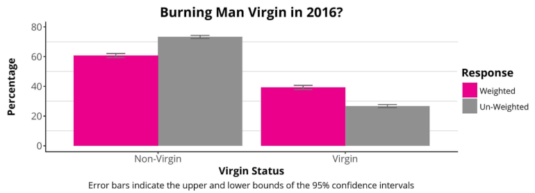
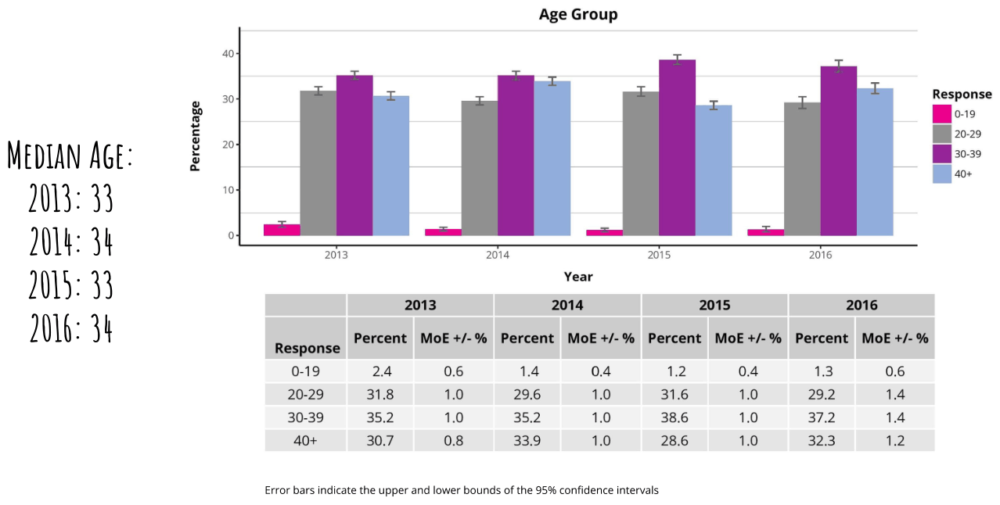
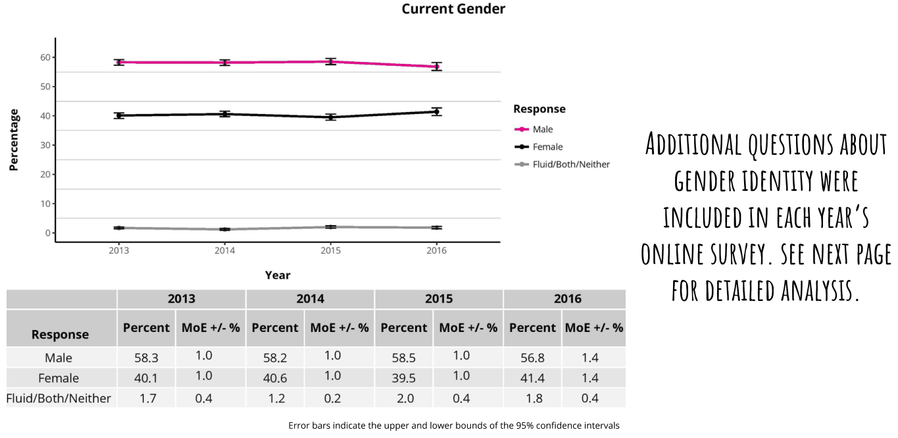
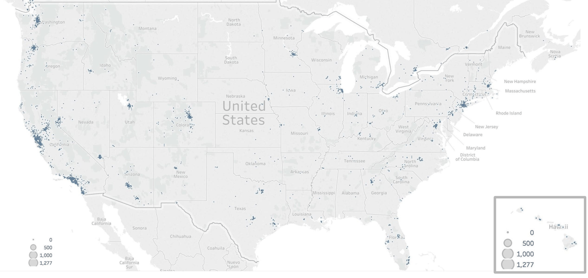
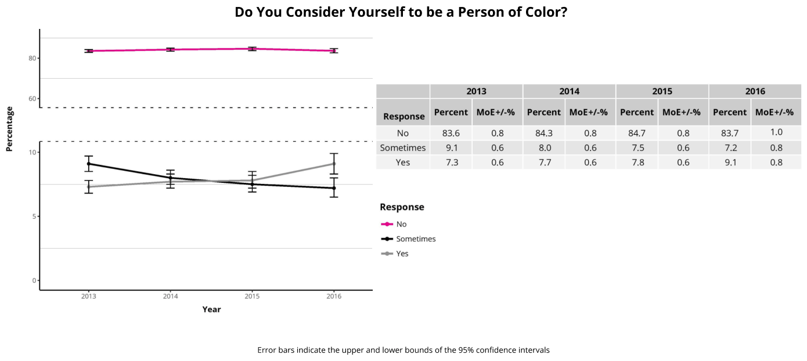

2013-2016 Population Analysis
How the Census Works
What is the Census?
The Census is a collaborative research project that started in 2002.
Although the BRC Census project is technically a survey and not a literal census (where data is collected from every member of a population), our methodology allows us to report on the entire population of Black Rock City (BRC), not just on the individuals who participate directly in our data collection.
We aspire to be a literal census one day, where every BRC resident voluntarily participates. Until that day, we will continue to provide the most complete picture possible of the highly diverse population of BRC.
The BRC Census project is made possible through the collective effort of volunteers, academic researchers, and the Burning Man Project. Our thanks to everyone whose contributions went into the creation of this report!
Method and Weighting Procedures
A research ethics committee at Université du Québec à Montréal (previously at Denver University) has determined that the project meets the standards to protect respondents and their confidentiality.
Since 2013, BRC Census has collected data in two phases: a random sample during the event and an online survey after the event. During the event, Census volunteers conduct the random sample by administering a short socio-demographic survey to randomly selected Burners who agree to participate.
After the event, announcements about the online survey are sent out via email lists, social media, the Burning Man website, etc. Some Burners participate but others do not, which introduces a self-selection bias in the survey results. To remove this bias, the online survey results are adjusted (or “weighted”) based on the results of the random sample.
Weighting Variables
Variables collected in the random sample, used to weight the online survey results:
- Day of arrival
- Gender
- Age
- Virgin burner or not
- US resident or not
- English as a first language or not
- US party affiliation (if eligible to vote in the US)
- Voting behavior
These data are collected from randomly selected Burners entering BRC who agree to participate, and the results are used to weight (and thereby improve the accuracy of) the online survey results. From 2013-2016, 5-10% of the BRC population participated in this random sampling process.
Weighted Results: an Example
In 2016, 73.3% of survey responses were non-virgins, which was higher than the percentage of non-virgins observed in the random sample (60.7%). This means that non-virgins were "over-represented" (and virgins "under-represented") in the raw results of the online survey.
In other words, we know from the random sample results that the raw survey results are not an accurate representation of these proportions of the BRC population. Fortunately, we can "weight" (or adjust) the online survey results using the results of the random sample:

These adjustments are applied throughout the entire online survey, giving more "weight" to the responses from under-represented groups and less "weight" to the responses from over-represented groups. The raw survey results only provide information about individuals who completed the online survey, but the weighted results represent the entire BRC population.
Data Collection via Online Survey
From 2013 to 2016, the number of completed forms (and the associated survey sampling rate) were, respectively, 11,919 (17%), 11,676 (18%), 9,585 (14%), and 7,137 (11%). This "survey sampling rate" indicates the percentage of the BRC population who completed the online survey in a given year based on the population count reported in each annual Burning Man report.
While the 2016 sampling rate is notably lower than previous years, the sampling rate is high enough to yield comparable results to past years using the methodology described here. As a comparison, the American Community Survey (the largest population survey in the USA) has a sampling rate of approximately 2.5% (National Research Council, 2007).
The response rate for the online survey (i.e., the number of participants divided by the number of people contacted) cannot be calculated, as there is no way to know how many BRC citizens were reached during our promotion of the online survey.
Census Results
The results in this report are the most reliable estimates we have of the Black Rock City population. The true population values may differ slightly from the presented estimates due to random variation in the sampling process. This report includes data from 2016 and, when possible, comparable (weighted) data from recent years.
While BRC Census has been producing reports since 2002, it is hard to make comparisons with reports from earlier years because of important differences in methodology - e.g., from a convenience sample of Census Lab visitors on-playa to a weighted online survey conducted post-event.
Reading This Report
Plots and Tables
![Line or bar plots are used to display the weighted (adjusted) percentage of the BRC population who have a Burning Man Virgin? ore 40 particular characteristic in common. ee 30 In most cases, the actual percentage values are not displayed in the plot They can be found in the 20 Percentage accompanying data table (below), 21a along with the margin of error (labeled “MoE +/-%") 2013 2014 2015 2016 Response Percent MoE+/-% Percent MoE+/-% Percent MoE+/-% Percent MoE+/-% Virgin 38.6 1.0 35.1 1.0 35.8 1.0 39.3 14 2014 2015 2016 Year 0.1%, so in some cases the total percentage values do not add up to exactly 100.0% All numbers are rounded to the nearest](images/p009.png)
Error Bars and Confidence Intervals
![Burning Man Virgin? ee Error bars are the black I-shaped markers that 30 overlay each data point on a line or bar plot While each data point shows a weighted o 20 Percentage percentage, there is always some uncertainty when 2013 2014 2015 2016 estimating the characteristics of a population based on a sample of that population - in this case the entire BRC population in a given year from the BRC citizens who provided data to BRC Census Year Error bars indicate the upper and lower bounds of the 95% confidence intervals 2013 2014 2015 2016 Response Percent MoE+/-% Percent MoE+/-% Percent MoE+/-% Percent MoE+/-%6 Virgin 38.6 1.0 35.1 1.0 35.8 1.0 39.3 14 The 95% confidence intervals indicated by these error bars help to show the degree of that uncertainty: there is a 95% probability that the upper and lower bounds of the I-shape contain the true value. They are a visual representation of the margin of error (shown in the “MoE +/- %" column in the data table) which measures the amount of “error” or uncertainty in the results of a survey conducted via random sample. On rare occasions due to rounding, values in this report may not follow this rule precisely In the plot and table above, 39.3% of the 2016 BRC population were estimated to be Burning Man virgins according to the weighted survey results. It can be said with 95% confidence that the true virgin proportion of the BRC population is contained within the range between 37.9% and 40.7% (95% confidence intervals), or 39.3% plus or minus 1.4% (margin of error)](images/p010.png)
Year-to-Year Changes
![A note about year-to-year changes and “significance”: Number of Years Since Your First Burn? When reviewing changes in a population over time, it is extremely important to remember that some reported changes 40 will be due to sampling methodology (using weighted Census data to report on the BRC population) or measurement error rather than being indicative of a consistently occurring change 3 in the population. mer 34 Yrs me 5-7 Yrs As a general rule, smaller differences from one year to another 20 ses'8-11'18 are more likely to be due to chance, while larger differences are gas 1245s more likely to be indicative of genuine changes in the BRC 10 a eve Response Virgin 1-2 Yrs Percentage population. Additional caution should be taken in situations with larger confidence intervals, as they indicate less certainty as to the exact population proportion For example, in the plot above and to the right: 2018 2018 vear 20s 201s e@ The black line for 16+ year Burners is fairly flat, with fairly small confidence intervals. The proportion of 16+ year Burners does not seem to have changed much from 2013-2016 e The pink line for Virgin Burners shows larger changes from 2013-2016, but the confidence intervals are also larger. In some cases where the data points look relatively far apart from one year to the next, the confidence intervals for those years overlap. It is difficult to know if these changes are due to random chance or to other, more significant population trends e The purple line for 1-2 Year Burners shows larger changes from 2014 to 2015, even considering the height of the confidence intervals. It is more likely, though not certain, that these changes are not due to random factors](images/p011.png)
Sociodemographic Characteristics
Prior Burning Man Experience
Burns Attended
![Percentage 40 3 2 heh Number of Burns Attended 2013 204 Year 2015 2016 34 57 8-10 11+ Error bars indicate the upper and lower bounds of the 95% confidence intervals Percent MoE+/-% 38.6 18.4 10.9 146 82 5.0 42 2013 1.0 08 06 08 04 04 04 PERCENT VIRGINS 38.6% 35.1% 35.9% 2016: 39.3% 203 04 20 Percent MoE+/-% Percent MoE+/-% Percent MoE+/-% 35.1 14.0 13.1 137 123 63 55 2014 1.0 06 08 08 08 06 06 35.8 209 12.2 Wa 10.7 47 46 2015 1.0 1.0 08 06 08 0.4 0.4 39.3 19.1 16 13.0 88 42 40 2016 14 10 08 08 0.6 04 0.4](images/p013.png)
Years Since First Burn
![Percentage Number of Years Since Your First Burn? Response Virgin 12 y15 3-45 e 8-11 Yrs 12-15 Yrs em 16+ Yrs BECAUSE MANY BURNERS ATTEND REPEATEDLY, BUT NOT EVERY YEAR THE RANDOM SAMPLING FORM AND ONLINE SURVEY BOTH ASK RESPONDENTS 10 INDICATE EACH OF THE YEAR(S) THEY HAVE ATTENDED 2013 Response Percent MoE+/-% P Virgin 38.6 1.0 12¥rs 22.4 08 B4Yrs 14.1 06 57¥rs 10.5 06 B11Yrs 7.6 06 12-45Yrs_ 5.0 0.4 16+ Yrs 18 02 Error bars indicate the upper and lower bounds of the 95% confidence intervals BURNING MAN 2015 2016 MoE +/-% Percent MoE +/-% 1.0 39.3 1.4 1.0 23.8 1.2 0.6 128 08 08 11.2 08 0.6 68 0.6 04 3.2 0.4 04 29 04](images/p014.png)
Age Groups

Education
![Education Achieved 50 wo. E–_–––_z–_ #1 Other Certifications 25 e ® 20 Respon: £ 20 J Response e ° I * None e 1 2 = = High School 10 G S a 20 –*Somecollege % § eee Associate Degree 0 2013, 2014 2015 2016 10: “® Bachelor's Degree Graduate Degree Year Response other only a ––– © Tech Vocational* =e Healing =® Beauty 2013 2014 2015 2016 2013 2014 2015 2016 Year Percent MoE +/-% Percent MoE +/-% Percent MoE +/-% Percent MoE +/-% 2013 2014 2015 2016 Response Tech Vocational* 10.4 06 93 06 208 08 88 08 Response Percent MoE+/-% Percent MoE+/-% Percent MoE+/-% Percent MoE+/-% 0"! P Healing 37 04 34 04 a7 04 28 04 None 09 02 04 0.2 0.6 0.2 03 0.2 Beauty 09 02 M 02 14 02 08 02 High School 55 06 45 oa 52 06 47 06 TD * The spike in tech vocational certifications in 2015 is likely due to a change in question Senp@sig I anil WS ne 0.8 16.8 0.8 145 i wording, rather than a change in BRC population characteristics. The 2013, 2014, and Associate Degree 5.5, 04 56 od 54 06 46 06 2016 online surveys all included identical questions about education and certifications Bachelors Degree I 426 FTO Te Fd 7G aT aa 4 while the question was worded differently in the 2015 survey Graduate Degree 24.1 08 270 08 27s 1.0 313 12 Other Only 13 02 14 02 os 02 14 04 Error bars indicate the upper and lower bounds of the 95% confidence intervals](images/p016.png)
Personal Income
![Percentage Personal Income Before Taxes (for the Previous Calendar Year)* 30 zs; Response 20; = = = > => $0-24,999 e $25,000-49,999 50,000.99,999 10 $100,000-299,999 e $300,000+ 2013, 2014 2015 2016 Year In 2015 and 2016, explanatory text was added requesting that respondents not include their spouse's income as their own. While this explanatory text was missing in 2013 and 2014, all four years’ surveys explicitly asked for the respondent's personal income before taxes in the previous calendar year 2013 2014 2015 2016 Response Percent MoE+/-% Percent MoE+/-% Percent MoE+/-% Percent MoE+/-% 0-24,999 275 1.0 25.9 1.0 24.6 1.0 29 1.2 25,000-49,999 21.8 0.8 21.5 0.8 22.0 1.0 21.2 1.2 50,000-99,999 29.5 0.8 29.2 1.0 29.5 1.0 29.5 1.2 100,000-299,999 18.9 08 20.7 0.8 21.0 08 24.0 1.2 300,000+ 23 0.2 27 0.4 29 0.4 3.4 0.4 Error bars indicate the upper and lower bounds of the 95% confidence intervals MEDIAN PERSONAL INCOME 2013: $51,100 N14: $53,900 2015: $54,100 2016: $60,000](images/p017.png)
Household Income
![Percentage 40 30 20 Household Income Before Taxes (for the Previous Calendar Year) 2015 Year 2015 Percent MoE+/-% Percent MoE +/-% Response 0-24,999 12.2 25,000-49,999 162 50,000-99,999 28.6 100,000-299,999 36.8 300,000+ We) 0.8 0.8 1.0 1.0 0.6 2016 2016 nil2) 1.0 14.7 1.0 26.9 1.2 39.1 1.4 8.0 0.8 Response 0-24,999 “= $25,000-49,999 MEDIAN HOUSEHOLD INCOME conse 2015: $89, 400 “= $200,000 2016: $44,200 Tie 20U3 AND ZOU ONLINE SURVEYS ofD NOT INCLUDE QUESTIONS ABOUT HOUSEHOLD INCOME 50 DATA PRESENTED HERE ARE FROM 2015-2016 Error bars indicate the upper and lower bounds of the 95% confidence intervals](images/p018.png)
Current Gender

![Percentage THE 2013 AND 2014 ONLINE SURVEYS ASKED ABOUT GENDER IDENTITY DIFFERENTLY FROM THE 2015 AND 2016 ONLINE SURVEYS Do You Consider Yourself to be... Do You Consider Yourself to be Transgender/Transsexual Participants Selected All That Applied 2 -® Trans* person =® Gender questioning (eg,, transgender, transsexual) = Two-Spirit “* Genderqueer Someone with an intersexual condition Gender non-conforming 6 2013 2014 Year & In 2013 and 2014, this question in the online survey also asked if = participants considered themselves to be polyamorous or a kinkster. $ 5 Data on these responses can be found later in this report. é x= Sex Assigned at Birth a 2015 2016 Malg or Female with an Intersex Condition Year 8 2015 2016 Percent MoE+/-% Percent MoE +/-% Response Trans* person (e.g., transgender, transsexual) 0.7 0.2 O7 0.2 Genderqueer 26 04 27 04 a awe Gender non-conforming 32 0.4 44 06 Year Gender questioning 1 0.2 18 04 In 2013 and 2014, the online surveys asked about sex assigned Two-spirit 2.0 04 28 0.4 at birth in addition to asking about current gender Someone with an intersexual condition 04 0.2 07 0.2 Error bars indicate the upper and lower bounds of the 95% confidence intervals](images/p020.png)
Sexual Attraction and Orientation
![Percentage Sexual Attraction 50 40: Response only Opposite Sex so “> Mostly Oppose Sex Eat e Mos Same sex 20: > Only same Sex oe 28 ara 2s aie Year 2013, (2014 2015 2016 nesponse cent MoE+/% Percent MoE+/-% Percent MoE4/-% Percent MoE+/-% Only Opposite Sex 50.5 1.0 478 1.0 48.0 12 48.2 14 Mostly Opposite Sex 33.8 1.0 36.7 1.0 35.8 1.0 36.0 14 Equally 63 06 63 04 60 06 63 06 MostySameSex 34 0436's Osi Onlysamesex 5104. si9s–i C(O Not Sure o4 02, «03:=S«–iO2siHSsCisit NoSexualAttraction 04 02 03 02 03 02 02 02 Percentage Sexual Orientation SYX__ +s 60 Response Heterosexual “= Gay orLesbian Bisewal Bicurious o > Asexual Refuses Labels SS 2013 2014 2015 2016 Year 2013 2014 2015 2016 Response Percent MoE+/-% Percent MoE+/-% Percent MoE+/-% Percent MoE+/-% Heterosexual 68.5 1.0 676 10 665 1.0 66.4 1.4 Gayor Lesbian 7.2 06 74 06 77 06 78 08 Bisexual 83 06 93 06 94 06 97 08 Bicurious 11.0 06 1.0 06 112 06 17 08 Asexual 04 02 02 02 04 0.2 04 02 Refuses Labels 4.7 04 a7 04 46 04 39 06 Error bars indicate the upper and lower bounds of the 95% confidence intervals](images/p021.png)
![Percentage Sexual Orientation by Current Gender Male Female Fluid/Both/Neither* a a 2013 2014 2015 2016 jercent MoE +/-% Percent MoE-+/-% Percent MoE 4/-% Percent MoE +/-%% i+; Response Current Gender: Male Heterosemual 7510 «1202=*=«OSD 1 HOT Gayorlesbian 107 08 105 08 16 10 7 12 of H+} 4 6 A ESS CE OES Bicurious 71 «06-–=Sss70s«iCsC(iti SCCM Aseual © «03=2=«02 DODO Refuseslabels 33 06 30 06 33 06 24 06 2 2 Current Gender: Female g 4 ga Heterosexual 60.9. 16 58.9 14 585 1.6 59.6 20 5 5 Gayoresbin 2104 210d 2k 2k Bisexual 139«S 12S SAS Bicuous «168 = 1217012718 Asewal 05 02 O04 02 05 02 04 02 2 2 Refuseslabels 59 08 «65 OBST OSHC Current Gender: Fluid/BothyNeither* HH Heterosexual 163°02«8820 6S ATTA i+ Gayorlesbian 59 43 82 49 59 41 122 67 Bisexual 32106 SSA 11.0 71ST 0 0 Biuous © 727='–s«Ss SCG GG Aswal oo 112213 20 BB SB 2013 2014 2015 2016 2013 2014 2015 2016 2013 (2014 2015) 2016 peer Year Year Year The larger confidence intervals for those in the Fluid/Both/Neither Response category are mainly due to the substantially smaller number of we Heterosexual cexcayerLeenin tGesinsee individuals self-reporting this gender category Bicurious > Asexual Refuses Labels Error bars indicate the upper and lower bounds of the 95% confidence intervals](images/p022.png)
Relationship Status
![Percentage 60 40 Do You Consider Yourself Married? Your Life With a Partner? ae Ee a Response 20 No 5 oo –––– Yes 5 2 Sometimes 10% = _– 0 2018 B04 2015 216 Year Year 2015 2013 2014 Percent MoE +/-% Percent MoE +/-% Response Response N eon ATG ei TG No 36.2 1.0 7 = Ba ay ae os Yes-NotMarried 32.7 1.0 z = Bie om ee 06 Yes-Married 22.7 08 i ema’ It's Complicated 8.5 06 Error bars indicate the upper and lower bounds of the 95% confidence intervals In the Default World, Do You Share 35.9 314 25.2 75 THE 2013 AND 2014 ONLINE SURVEYS ASKED ABOUT RELATIONSHIPS DIFFERENTLY FROM THE 2015 AND 2016 ONLINE SURVEYS Response No Yes - Not Married Yes - Married Its Complicated Percent MoE+/-% Percent MoE+/-%](images/p023.png)
![Percentage Would You Describe Your Relationship as an Open Relationship? a},- 2015 2016 Year Response No Relationship Not Open Somewhat Open Open It's Complicated 2015 Response No Relationship 36.3 Not Open 38.3 Somewhat Open 9.2 Open 5.7 It's Complicated 10.5 1.0 1.0 0.6 0.6 0.6 36.0 38.2 cea 6.3 og THIS QUESTION WAS NOT INCLUDED IN THE 2013 OR 2014 ONLINE SURVEYS, SO DATA PRESENTED HERE ARE FROM 2015-2016 Error bars indicate the upper and lower bounds of the 95% confidence intervals Percent MoE+/-% Percent MoE+/-% 1.4 1.4 0.8 0.6 0.8](images/p024.png)
Sexuality
![Percentage 40 Additional Sexuality Labels (Participants Selected All that Applied) ef 2015 2016 Year THE 2013 AND 2014 ONLINE SURVEYS ASKED ABOUT THESE LABELS DIFFERENTLY, SO DIRECT COMPARISON ACROSS ALL FOUR YEARS IS IMPOSSIBLE. POTENTIALLY NOTEWORTHY TRENDS INCLUDE e Arelative increase in “polyamorous” responses (11.1% in 2013, 14.9% in 2014) e Varied responses to the “kinkster” self-identity (8.1% in 2013, 14.9% in 2014) THE PLOT (LEFT) AND TABLE (BELOW) INDICATE ONLINE SURVEY RESPONSES FROM 2015-2016 Response “© Monogamous Response Polyamorous Monogamous Kinkster Polyamorous Swinger Kinkster Queer Swinger Sex/Love Addict Queer Open/Curious Sex/Love Addict Open/Curious Error bars indicate the upper and lower bounds of the 95% confidence intervals 2015 2016 Percent MoE+/-% Percent MoE +/-% 62.3 59.9 20.3 10.8](images/p025.png)
Religion and Spirituality
![Percentage 40 30 20 Spirituality Response Religious Spiritual, Not Religious Atheist e Agnostic e Deist Don't Know 2013 2014) 2015) 2016 Year 2013 2014 2015 2016 esponee! Percent MoE+/-% Percent MoE+/-% Percent MoE+/-% Percent MoE+/-% Religious 63 0.4 EG} 0.4 5.4 06 61 06 Spiritual, Not Religious 49.2 1.0 50.4 10 458 1.0 46.5 14 Atheist 21.9 08 213 08 23.9 1.0 24.8 1.2 Agnostic 15.5 08 146 08 159 08 147 1.0 Deist 08 0.2 08 0.2 09 02 08 0.2 IDon't Know 63 06 74 0.6 8.0 06 74 08 Error bars indicate the upper and lower bounds of the 95% confidence intervals](images/p026.png)
![Percentage De eieneaispein aie iniaeire ea eine ein amnineerein ee Response Religion or Religious Denomination 2014 2015 2016 Response Percent MoE+/-% Percent MoE +/-% Percent MoE +/-% wane eee eee ee eee eee eee eee eee eee eee > Buddhist Buddhist Ba 0.4 18 0.4 19 0.4 Catholic oe christian (other) Catholic 6.1 0.4 Za 0.6 7.0 08 Hinau Christian (Other) 3.8 0.4 4.0 0.4 4.6 0.6 Jewish Hindu 0.4 0.2 0.5 0.2 07 0.2 Muslim Jewish 6.6 0.6 6.6 0.6 6.4 06 e Pagan Muslim 0.3 0.2 0.5 0.2 0.6 0.2 2015 Year “> Pastafarian Pagan 14 0.2 1.2 0.2 1.2 0.4 et= Protestant Pastafarian 1.6 0.2 1.6 0.2 11 0.2 a Protestant 24 0.2 23 04 26 04 easNatalizon Other 4a 04 3.2 04 23 04 No Religion 15 1.0 n3 1.0 15 12 THE 2013 ONLINE SURVEY DID NOT INCLUDE ALL OF THE ANSWER OPTIONS PROVIDED IN 2014-2016, SO DIRECT COMPARISON ACROSS ALL FOUR YEARS 1S IMPOSSIBLE. THE DATA PRESENTED HERE ARE FROM 2014-2016 2016 Error bars indicate the upper and lower bounds of the 95% confidence intervals](images/p027.png)
Current Place of Residence
![Percentage 80 60 S–_ Region of Residence Respor Africa 07 Asia 02 Canada 24 To - Europe 73 Latin America* 3.3 AustraliaorNZ 0.7 UKorireland 3.2 USA 817 Response Africa Asia Canada Europe e Latin America * Australia or NZ UK or Ireland USA 2013 2014 Year 2015 2016 Error bars indicate the upper and lower bounds of the 95% confidence intervals 2013 02 0.0 0.4 06 0.4 02 0.4 08 06 04 18 48 44 07 25 843 2014 02 02 0.2 04 0.4 02 02 08 07 06 62 53 1.0 22 33 79.6 2015 02 02 06 06 02 04 04 10 1 09 67 55 08 28 27 79.5 2016 In the plot (left) and table (above), Latin America includes Central and South America in addition to the countries of North America that are South of the USA nse Percent MoE+/-% Percent MoE+/-% Percent MoE+/-% Percent MoE+/-% 04 02 08 08 02 06 06 12](images/p028.png)
US Resident Data
![Percentage State of Residence (US Residents Only) 2013 2014 2015 2016 Response A Percent MoE#/-% Percent MoE¥+/-% Percent MoE+/-% Percent MoE+/-% Response mn A 519 12 $23 12 493 12 5 16 mer WA Ny 5906 5706 72 06 81 08 iy WA 64 06 59 06 63 06 63 08 eee OF NV 66 06 65 06 62 06 57 08 co OR 54 06 57 06 43 06 44 06 co 3004 36004 3506 40 06 AZ ™ 24 04 19 04 2 04 23 06 MA az 1804 18 04 2200 04 18 04 Ww MA 16 04 1504 1504 1804 our IL 18 04 17 04 20 Of 1504 f UT 19 04 16 04 1504 1504 Error bars (left) indicate the upper and lower bounds of the 95% confidence intervals. The plot (left) and table (above) display any state of residence reported by 1.5% or more of the BRC population who reported residing in the US on the 2016 online survey. Residents of states comprising smaller proportions of the US population are omitted here, as are BRC residents residing outside of the US 2013 2014 2015 2016 Year](images/p029.png)
2016 US Resident Data

Countries Visited
![Percentage 3S Number of Countries Visited (Excluding Country of Residence) 2014 2015 2016 Response I a Response Percent IIMoE +/-96 Percent I MoE +/-9% I Percent I MoE +/-% I I 0 3.0 0.4 32 0.4 26 0.5 I 2 1 5.3 0S 5.2 0S 4.6 0.6 I I 34 2 63 05 58 0.5 Ss} 0.6 Bis 3-4 11.3 07 99 07 96 08 I 7-9 5-6 10.9 07 10.4 0.7 98 0.8 I Bos 79 13.8 08 13.5 08 123 09 I His 10-14 19.2 08 18.4 08 19.2 1 1 I 20-29 15-19 11.4 07 11.7 0.7 12.3 09 I 30-49 20-29 10.2 0.6 11.5 0.7 13.2 09 Bs 30-49 67 0S 78 0.6 7.2 07 50+ 2.0 03 25 03 38 0S I i I i i THIS QUESTION WAS NOT INCLUDED IN THE 2013 ONLINE SURVEY, 5 DATA PRESENTED HERE ARE FROM 2014-2016 2014 2015 2016 Year Error bars indicate the upper and lower bounds of the 95% confidence intervals](images/p031.png)
Language
![Percentage Native Language (Defined as the First Language Participant Learned and Still Uses) ee Response 2013 2014 2015 2016 Chinese Percent MoE#/-% Percent MoE+/-% Percent MoE+/-% Percent MoE+/-% Response English Chinese 0.6 02 06 02 1 02 1.0 02 sw French English 87.7 0.6 83.6 08 80.1 10 78.1 1.2 “© German French 1.7 02 28 04 29 04 37 06 Dorr ttt ttre © Hebrew German 1.4 02 iz 02 23 04 25 04 ee eee we italian Hebrew 07 02 09 02 09 02 1.0 04 italian 03 02 06 02 06 02 1.0 oa nem Russian Russian 16 02 20 0.4 22 04 22 0.4 Spanish Spanish 7 0.2 aa 04 34 04 28 06 T Other Other 43 oa 51 04 65 06 76 08 Error bars indicate the upper and lower bounds of the 95% confidence intervals. The plot (left) and table (above) display any native language reported by 1% or more of the BRC population in any year. An additional 13 languages are included in the online survey with population proportions under 1% in 2013-2016. They are represented here as part of the "Other" category along with responses from participants who selected the "Other" option from the online survey 2013 2014 2015, 2016 Year](images/p032.png)
US Politics
![Percentage US Political Party Affiliation 80 Percentage 20 US Voting History (Voted in 1+ of the last four US federal elections prior to each Burning Man) ee Response 60 Voted Did Not Vote 20 _––––– > Not Eligible 2013 5 Response Voted 683 “ £ DidNot Vote 9.1 Not Eligible 22.7 Ht Response Not Eligible Democratic 2013 214 2015 Republican Year Libertarian Green American Independent Party Other None Response “™ Notelgible =e Republican =e Green > other Democratic LUbertarian ‘American Independent Party =® None 2013 2014 ais Year US Voting History (2014 (2015 10 0.6 08 63.2 12.0 248 US Political Party Affiliation 1.0 724 08 94 10 18.5 2013 Percent MoE+/-% 22.7 33.5 5.2 37 2.0 2.0 11 29.7 1.0 08 04 04 02 04 02 1.0 Error bars indicate the upper and lower bounds of the 95% confidence intervals 18.5 34.6 48 28 22 13 15 343 2014 08 1.0 04 04 02 02 0.4 1.0 ercent MoE+/-% Percent MoE+/-% 24.8 314 44 3.0 23 15 18 30.7 2016 2016 Percent MoE+/-% Percent MoE+/-% Percent MoE+/-% Percent MoE+/-% 12 59.5 14 08 13.0 12 10 27.6 14 2015 2016 1.0 1.0 04 04 04 02 0.4 1.0](images/p033.png)
Ethnoracial Characteristics
Ethnoracial Background
![Percentage Ethnoracial Diversity in BRC 80: eee 60 Response “> White/Caucasian (non-Hispanic) tt rr rrr nnn reer rece eee cece > Asian 10 a 4 =–® Hispanic/Latino Et I I a Native American “= Other or Multiple 0 2013 2014 2015 2016 Year 2013 2014 2015 2016 Response Percent MoE+/-% Percent MoE+/-% Percent MoE+/-% Percent MoE+/-% White/Caucasian (non-Hispanic) 82.9 08 811 08 80.2 1.0 79.1 12 Asian 37 0.4 39 0.4 42 04 57 0.6 Hispanic/Latino 3.0 04 41 0.4 51 0.6 43 0.6 Black 09 0.2 07 0.2 07 0.2 11 0.2 Native American 0.5 0.2 04 0.2 0.4 0.2 04 0.2 Other or Multiple 91 0.6 97 0.6 95 0.6 94 08 Error bars indicate the upper and lower bounds of the 95% confidence intervals](images/p035.png)
Self-Identification as a Person of Color

Additional Population Characteristics
Reasons for Attending Burning Man
![Percentage 20 Year Reasons for Going to BRC This Year (Participants Selected Up to 3 Reasons) Response Tosee/experience the art “> Tocreate/work on a project Tobe with friends or like-minded people / feel a sense of belonging Tomeet people who are different from me “> Toplay and experience freedom Toconsume intoxicants Toescape the world for atime Toexpress myself “> To experience gifting and decommodification Torely on myself and practice useful skills Toperform and practice artistic skills Tossatisfy my curiosity / checkit off my “bucket list" Togrowor connect spiritually Tosatisty someone else's wish that I be there Response To see/experience the art To create/work on a project To be with friends or like-minded people / feel a sense of belonging To meet people who are different from me To play and experience freedom To consume intoxicants To escape the world for a time To express myself To experience gifting and decommodification To rely on myself and practice useful skills To perform and practice artistic skills To satisfy my curiosity / check it off my "bucket list” To grow or connect spiritually To satisfy someone else's wish that I be there Error bars indicate the upper and lower bounds of the 95% confidence intervals THE ANSWER OPTIONS FOR THIS QUESTION WERE DIFFERENT IN THE ONLINE SURVEYS FROM 2013 AND 2014, SO DIRECT COMPARISON ACROSS ALL FOUR YEARS 15 IMPOSSIBLE. DATA PRESENTED HERE ARE FROM 2015-2016 2015 2016 Percent MoE +/-% Percent MoE +/-% 56.7 fr 62.5 14 137 08 12.0 08 58.2 12 59.2 14 2 08 135 1.0 44.0 12 39.7 14 40 06 37 06 32.7 12 28.8 14 90 08 93 08 10.2 08 87 0.8 93 08. 75 08 33 04 23 04 84 08 10.2 1.0 23.6 1.0 216 12 34 04 Za 0.4](images/p038.png)
Self-Identification as an Artist
![Percentage Main Form of Art (Responses from Participants Who Self-Identify as Artists) 60: _–-VJDIH–_ –___ 1 Response 50. = Response <> Performing Arts No, But Creative Literary Arts Do You Consider Yourself an Artist? 40 -_ pee mg aie 30 No z 5 Other 20. pee s = = £ 20 10 9 = = –_=– –= 2013 2014 2015 2016 = = = Year ° 2013 2014 2015 2516 Year 2013 2014 (2015 2016 2013 2014 2015 2016 Percent MoE +/-% Percent MoE+/-% Percent MoE +/-% Percent MoE +/-% a Percent MoE +/-% Percent MoE +/-% Percent MoE +/-% cent MoE +/-% Response No, me aa 466 Cie ace 2 si2 2 aaa 14 Performing Arts 29.4 1.6 279 18 28.9 22 293 22 Yes 341 10 35.0 10 317 12 353 14 Literary Arts 7S 1.0 75 1.0 83 1.2 8.6 14 No 193 os 187 08 174 1.0 206 12 Visual Arts 57.2 18 60.1 2.0 58.0 22 58.6 24 Other 59 08 45 08 48 1.0 35 1.0 Error bars indicate the upper and lower bounds of the 95% confidence intervals](images/p039.png)
![Percentage 40 30 20 10 Do You Get Paid for Your Art? (Responses from Participants who Self-Identify as Artists) I I I Response Ho i rarely Sometimes Often Bi main income source 2013 Response No Rarely Sometimes Often Main Income Source 2014 2013 Year 2015 2014 2016 2015 2016 Percent MoE +/-% Percent MoE+/-% Percent MoE+/-% Percent MoE +/-% 26.5 19.0 29.8 8.1 16.7 Error bars indicate the upper and lower bounds of the 95% confidence intervals 1.6 14 1.6 1.0 1.2 24.8 20.8 28.3 9.0 17.0 18 1.6 18 1.0 14 P75) 19.9 27.1 84 17.2 2.0 1.8 2.0 1 1.8 34.8 17.5 24.8 8.2 14.7 24 18 22 14 18](images/p040.png)
Relationship with Others
![Percentage Which Picture (Below) Best Describes Your Current Relationship with Other Human Beings, on Average? OOO 30 2 2015 2016 I Response A Percent MoE +/-% Percent MoE +/-% 0. I I Response Be A 40 0.6 38 0.6 i: B 13.4 08 18.0 12 p € 19.8 1.0 21.4 1.2 10 E D 29.3 1.2 24.7 12 a E 19.9 1.0 20.4 12 Bc F 88 08 8.2 08 G 48 06 3.6 06 2015 2016 THIS QUESTION WAS NOT INCLUDED IN THE 2013 OR 2014 ONLINE SURVEYS, SO DATA PRESENTED HERE ARE FROM 2015-2016 Error bars indicate the upper and lower bounds of the 95% confidence intervals](images/p041.png)
Volunteerism and Acquired Skills
![Response Volunteerism by Participants in the Prior Year (Participants Selected All That Applied, Asked Only in 2016) Burning Man - Black Rock City Burning Man - Regionals Percentage Burners Without Borders Art Projects After Going to BRC, Were You Inspired to do More Volunteering? (Asked Only in 2016) Political Campaigns/Voter Registration Volunteerism by Parti in the Prior Year (I Response Burning Man - Black Rock City Schools/Universities nimalsEnironmental Clean-Up I Burning Man - Regionals Burners Without Borders Art Projects Political Campaigns/Voter Registration Schools/Universities Community Groups/Clubs Self-Initiated Good Deeds Other Non-Profits and Charities Animals/Environmental Clean-Up Community Groups/Clubs Self-Initiated Good Deeds Other Non-Profits and Charities 20 Percentage Error bars indicate the upper and lower bounds of the 95% confidence intervals 50 40 30 20 10 0 Yes ipants Left) Percent MoE+/-% 21.0 7 1.0 212 9.9 15.4 14.9 27.9 37.2 11.9 Maybe Response 1.0 08 0.2 1.0 08 1.0 1.0 12 14 08 No After Going to BRC, Were You Inspired to do More Volunteering? (Above) Response Percent MoE +/-% Yes 49.8 14 Maybe 30.5 1.2 No 19.7 1.0](images/p042.png)
![Response Have Any of These Skills Proved Useful in the Default World? After Visiting BRC, Were You Inspired to Learn or Practice Any Skills? (Asked Only in 2016) (Asked Only in 2016, Participants Selected All That Applied) 60 texteshornepesor! sis] § 20 cad I “* Project Management 10; –_ Constructon/Heavy Machinery i CarpentryMetavork I Ves, very usfulin Yes somewhat No, butthey may No, not at al useful the default world useful inthe default be at some point outside Black Rock cooncosen] RF After Visiting BRC, Were You Inspired "°"! cy to Learn or Practice Any Skills? (Asked Response Mediation Sldiis Ig Only in 2016, Participants Selected All That Applied) (Left) Seewarenessimovonal ls PF Response Percent MoE +/-% Have Any of These Skills Proved Useful in Other Ei Art Creation 66.3 14 the Default World? (Asked Only in 2016) Performance Art 29.2 14 (Above) Leadership/interpersonal Skills 42.2 14 Response Percent MoE +/-% Percentage Project Management 298 14 Yes, very useful in the default world 559 14 Construction/Heavy Machinery 17.1 12 Yes, somewhat useful in the default world 32.0 14 Carpentry/Metalwork 29.7 14 No, but they may be at some point Wd 1.0 Graphic Design 124 1.0 No, not at all useful outside Black Rock City 0.4 02 Mediation Skills, 30.2 14 Self-Awareness/Emotional Skills 66.1 14 Other 47 06 Error bars indicate the upper and lower bounds of the 95% confidence intervals](images/p043.png)
![Percentage Have You Earned, or Do You Use, Any Certifications as Part of Your Burning Man Experience? (Asked Only in 2016) Response CPR/Emergency Response Earned For/Because of Burning Man Used at Burning Man Held But Not Used at Burning Man 11D0 Not Have This Certification Food Safety Earned For/Because of Burning Man Used at Burning Man Held But Not Used at Burning Man 1100 Not Have This Certification Fire Safety Earned For/Because of Burning Man Used at Burning Man Held But Not Used at Burning Man D0 Not Have This Certification HIPPA Earned For/Because of Burning Man Used at Burning Man Held But Not Used at Burning Man 1100 Not Have This Certification OSHA Earned For/Because of Burning Man Used at Burning Man Held But Not Used at Burning Man car Food Frosty WEP osha Tey Do Not Have This Certification imeem ey waciney agg achinety Oparato sponse erator leavy ao Certification Earned For/Because of Burning Man Response Used at Burning Man il earned For/eecause of Burning Man iif Held But Not Used at Burning Man Held But Not Used at Burning Man Bh Used at Burning Man [Bh '00 Not Have This Certification Tess Net pe acer iteatonI Error bars indicate the upper and lower bounds of the 95% confidence intervals Percent MoE #/-% 06 2A 294 682 os 4s 107 12 33 72 88.4 on 16 76 906 04 12 53 93.1 02 03 40 955 02 04 12 12 02 6 os 10 02 04 08 08 00 04 06 08 02 02 06 06 02 02 06 06](images/p044.png)
Research Questions from Collaborators
Perception of Others
![Percentage 40 30 20 10 To What Extent Do You Assume that People Have Only the Best Intentions? (Asked Only in 2016) Response I I 7 I I ie Bi - Avsotutely minal LL In Black Rock City In the Default World Setting In Black Rock City In the Default World Percent MoE +/-% Percent MoE +/-% Response 1-Notatall 2.0 04 405 10 B = Os 13.9 10 3 36 06 477 12 4-Somewhat 16.4 10326 mA 5 274 12 467 10 6 347 14 66 os 7-Absolutely 146 10 19 me Error bars indicate the upper and lower bounds of the 95% confidence intervals](images/p046.png)
Burning Man Experience
![Percentage Did You Feel Connected to Others Around You in BRC This Year? iy as Response Bil very connectes Mostly Connected Neither Connected nor Disconnected El Most visconnected BB ver disconnectes co x 2015 2016 Year 2015 2016 Percent MoE +/-% Percent MoE +/-% Response Very Connected 37.7 12 40.7 14 Mostly Connected 46.2 12 463 14 Neither Connected nor Disconnected 11.1 08 94 08 Mostly Disconnected 45 06 29 4 Very Disconnected 06 02 06 02 Percentage Did You Feel Free* in BRC This Year? 60 Response Bese Mostly Free “0 Nether Free nor Constrained Bil ost constrained Bil ery constraines 20 Le La 2015 2016 Year 2015 2016 Percent MoE +/-% Percent MoE +/-% Response Very Free 620 12 668 14 Mostly Free 309 12002 Neither Free nor Constrained 5.3 06 44 06 Mostly Constrained 15 04 1.0 02 Very Constrained 02 02 04 0.0 In the online survey, this question was phrased "Did you feel free (to explore, try new things, express yourself, be spontaneous, take risks) in Black Rock City this year? THESE QUESTIONS WERE NOT INCLUDED IN THE 2013 OR 2014 ONLINE SURVEYS, 50 DATA PRESENTED HERE ARE FROM 2015-2016 Error bars indicate the upper and lower bounds of the 95% confidence intervals](images/p047.png)
![Percentage Did You Feel Safe in BRC This Year? 80 Response e Bi ver sate Mostly Safe Neither Safe nor Unsafe 40 [Bh most unsafe BB vex unsate ae 20 0 Sm = - – 2015 2016 yes Year g z 2015 2016 8 sortor Percent MoE +/-% Percent MoE +/-% é Response Very Safe 708 12 74.2 12 No Mostly Safe 25.9 12 235 12 Neither Safe nor Unsafe 3.0 04 19 04 Mostly Unsafe 03 02 02 02 Very Unsafe 00 00 4 0.0 THIS QUESTION (ABOVE) WAS NOT INCLUDED IN THE 2013 OR 2014 ONLINE SURVEYS, SO DATA PRESENTED ABOVE ARE FROM 2015-2016 Do You Identify as a Burner? (Asked Only in 2016) 4 6 20 40 60 80 Percentage Response Percent MoE +/-% Yes 725 1.2 SortOf 23.4 12 No 41 0.6 Error bars indicate the upper and lower bounds of the 95% confidence intervals](images/p048.png)
![Percentage How Much Did You Enjoy Your Experience in BRC This Year? 60 Response HB extreme ALot 7 40) “ Do You Intend to Come Back to BRC in the Future? de r I Somewhat 80 asi Response 20: PB soca ait Bh se sotutely a. eo © Probably a z = & L g Not Sure L Lo - - = 40 [Bl Probably Not 2013 2014 2015 2016 5 a Absolutely Not Year = ¥ 20 . ze 2013 2014 2015 2016 = Percent MoE+/-% Percent MoE +/-% Percent MoE+/-% Percent MoE +/-% 2 a i = Reroreel °. LL La a a Extremely 58.0 1.0 56.0 12 52.2 12 575 14 2013 2014 2015 2016 Alot 332 1.0 344 1.0 35.3 12 343 14 Year Somewhat 7.8 06 80 06 105 08 66 08 ae ma ai aie Ait 09 0.2 14 02 19 04 15 04 Notatall 0.2 0.0 02 0.0 04 0.0 o4 0.0 Response Percent MoE/-% Percent MoE+/-% Percent MoE+/-% Percent MOE +/-% Absolutely 76.1 08 78.2 1.0 75.3 1.0 768 12 Probably 174 08 158 08 18.4 1.0 176 12 Not Sure 49 04 46 04 48 06 38 06 ProbablyNot 1.4 02 10 0.2 13 0.2 1s 04 Absolutely Not 0.2 0.0 03 02 02 0.0 04 0.2 Error bars indicate the upper and lower bounds of the 95% confidence intervals](images/p049.png)
![Percentage 40 Do You Consider the Burner Community Family? wa Response Bhovremey have Somewhat asx BBs ca L Response Extremely Alot Somewhat ABit Not at All 2013 Percent MoE +/-% 229 30.0 31.2 124 35 2013 1.0 10 1.0 06 04 2014 Year 2015 29.9 33.0 25.6 86 29 12 12 12 08 0.4 Error bars indicate the upper and lower bounds of the 95% confidence intervals 2016 274 343 27.0 87 25 12 14 12 08 04 Percentage 40 30 20 1 3 Do You Consider BRC to be Your Home? Jd Response Only Home Bl vain tome Bl second tome asic Response Only Home Main Home Second Home ABit Not Sure No 2013 2013 2014 Year 2014 2015 2015 2016 2016 Percent MoE +/-% Percent MoE +/-% Percent MoE +/-% Percent MoE +/-% 37 10.6 478 191 541 13.8 04 06 1.0 08 04 08 42 10.1 52.7 173 49 10.7 04 08 12 08 04 06 44 10.4 49.9 17.0 49 136 0.6 08 1.2 1.0 06 08 39 94 477 19.9 53 138 06 08 14 12 08 1.0](images/p050.png)
![Most Wonderful Memories of BRC This Year (Participants Checked the Best Answer) 2016 Response Hil reopie Music Be Biboue BB Personal events/Accomplishments other I Don't Have Any 2015 2016 Percent MoE +/-% Percent MoE +/-% Percent MoE +/-% Percent MoE +/-% 60 40 5 20 0 2013 2014 Response People 56.8 Music ES Art 19.0 Nature 18 Personal Events/Accomplishments 12.2 Other 43 Don't Have Any 03 1.0 0.4 08 02 06 0.4 02 59.2 49 16.3 25 133 35 03 12 04 08 04 08 04 02 60.0 1.2 59.6 14 35 0.4 42 06 14.9 08. 177 1.2 25 04 25 0.4 13.9 08 10.8 08 48 06 48 06 05: 02 04 02 Error bars indicate the upper and lower bounds of the 95% confidence intervals](images/p051.png)
Post-Burn Experience
![Response Did You Have New Friends that You Interact in the Default World, After Going to BRC? (Asked Only in 2016) Yes No I Don't Know 0 20 Response Yes No I Don't Know 40 60 80 Percentage Percent MoE +/-% Yes 78.2 12 g 2 147 1.0 s No 7A 08 & I Don't Know Did You Engage in New Playful Activities in the Default World, After Going to BRC? (Asked Only in 2016) Error bars indicate the upper and lower bounds of the 95% confidence intervals 20 30 40 50 60 Percentage Response Percent MoE +/-% Yes 52.8 14 No 26.1 1.2 I Don't Know 21.1 1.2](images/p052.png)
Play in Life
![Response The Joker The Explorer The Competitor The Director The Collector** The Mover*** The Artist/Creator The Storyteller Other I Rarely Played Do You Often Feel Drawn to Playing One of these Characters in Your Life*? (Asked Only in 2016) The Joker 10.0 The Explorer 30.0 The Competitor 2.8 The Director 10.7 The Collector** 6.8 The Mover*** 53 The Artist/Creator 11.9 The Storyteller 7.0 Other 3.0 IRarely Played 12.5 20 Percentage Error bars indicate the upper and lower bounds of the 95% confidence intervals Response Percent MoE +/-% 1.0 14 0.4 08 08 06 1.0 08 0.6 1.0 In the online survey, this question was phrased “Do you often feel drawn to playing one of these characters in your life (regardless of the struggle cost, challenges, or unpleasantness involved in being that person)?” This character was described in the online survey as "The Collector (likes collecting things/ experiences)" This character was described in the online survey as “The Mover (likes moving their body)"](images/p053.png)
Play at Burning Man
![Response When You Are Playing at Burning Man and Experiencing Joy, Which of the Following Characters Best Describes You in Those Moments? (Asked Only in 2016) The Joker The Explorer Response Percent MoE +/-% The Joker 78 08 The Competitor: The Explorer 51.3 14 The Competitor 0.4 02 The Director The Director 3.0 0.4 The Collector* 99 08 The Collector* The Mover** 10.7 1.0 The Artist/Creator 4.5 06 The Mover** The Storyteller 5.6 06 Other 47 06 The Artist/Creator I Rarely Played 24 0.4 This character was described in the online survey as ‘The Collector (likes collecting things/experiences)’ This character was described in the online survey as "The Mover (likes moving their body)” The Storyteller Other I Rarely Played 20 30 40 50 Ga Percentage Error bars indicate the upper and lower bounds of the 95% confidence intervals](images/p054.png)
![Response Talking Nonsense/Teling Jokes Playing Practical jokes Doing Physical Actvtes/Sports/Stunts Yoga! Dancing Fire Spinning/ire Arts Circus ants Doing Magic Ticks Costumes/Dressing Up Going Naked/Wearing Less Clothes Going to New Places Trying New Things Meeting New People Fiirting/Having Sex with New People Flrting/Having Sex with Your Partner Winning/Tryng to Win Collecting Things Collecting New Experiences Making Stuart Repairing Stuttart Building/Assembling Telling Stories Witting Playing Music Singing Riding a Bicycle other Percentage Which Activities Best Elicit that Character* in You at Burning Man? (Participants Selected All that Applied, Asked Only in 2016) Response Percent MoE +/-% Talking Nonsense/Teliingjokes 28.1. 1.4 Playing Practical Jokes 73 08 Doing Physical Actvties/Sports/Stunts 198 1.2 Yoga 72 08 Dancing 41014 Fire Spinning/Fire Arts 6708 Circus ans 4406 Doing Magic Ticks 07 02 * The question prior to this on Costumes/Dressing Up 469 14 the online survey asked Going Naked/Wearing Less Clothes. 27.614 participants to identify a Going to New Places 58514 character that best identified Trying New Things oa7 1a them when they were playing Meeting New People 68.9 14 and experiencing joy at Fliting/Having Sex with New People 2361.2 Burning Man. This follow-up Flirting/Having Sex with Your Partner 19.2 1.2, question was asked of all Winning/Trying to Win 2806 participants, regardless of the Collecting Things 104 10 answer selected in the Collecting New Experiences 49.4 14 previous question Making Stuff/Art 237 12 Repairing Stuff/Art 147 1.0 Building/Assembling 239 12 Telling Stories 28 12 Writing 55 06 Playing Music 9810 Singing a8 08 Riding a Bicycle 5691 Other 66 (06 Error bars indicate the upper and lower bounds of the 95% confidence intervals](images/p055.png)
Transformative Experience
![Percentage Did You Have a Transformative Experience in BRC This Year*? What Was the Extent of this Transformation? (Responses from Participants Reporting Some Degree of Transformative Experience in BRC, Asked Only in 2016) l EE / zz BE a a 4 – Bh AbsotutetyDeitly a Response 2018 2018 ° Ig Year This question and most answer options were identical in the 2015 and 2016 7 - Complete ong sry hoween 015 te aro otan cor sondiga th i ~ ~ (2015 2016 Percentage tspnse Pesan mosses een weer THESE QUESTIONS WERE NOT INCLUDED INI mpanaroa wos sso ene EVERY ONLINE SURVEY FROM 201310 2016. 0 239 t0 acsomenbst tsar a–DATA PRESENTED LEFT ARE FROM 2015-2016; 4 2asuiia “ . iso 10 ioe v0–-CDATA PRESENTED RIGHT ARE FROM 2016 ONLY. é eam mE 7-Absolutely/Definitely 19.6 1.0 27 12 7- Complete 33 06 Error bars indicate the upper and lower bounds of the 95% confidence intervals](images/p056.png)
![40 Percentage To What Extent Did You Experience the Following Changes this Year? (Responses from Participants Reporting Some Degree of Transformative Experience in BRC, Asked Only in 2016) 1 I i I I I 1 I dl I il a FLL I kh all I Response 1 Not at All 7-Complete I Felt a Sense of Awe Felt a Sense of Awe Perceived Treitlikea IFeltasThough _ I Perceived 1 Perceived TFelt More Different My"Self"Had Something New SomethingNew Something New Socially Person Than I Dissolved ‘About Myseif About Others “About Reality __Connected* Was Before Typeof Change IFeltlikea 1 Felt as Though I Perceived Perceived I Perceived Different Person My"self" Had SomethingNew Something New Something New Than! Was Before Dissolved ‘About Myself ‘About Others: ‘About Reality Felt More Spiritually Connected** Felt More Socially Connected* 1 Felt Like Layers Had Been Peeled Back to Reveal My True Self Felt More Spiritually Response BB wotacan EE Felt Like Layers Percent MoE+/-% Percent MoE+/-% Percent MoE+/-% Percent MoE+/-% Percent MoE+/-% Percent MoE+/-% Percent MoE+/-% Percent MoE+/-% Percent MoE +/-% 27 40 54 106 156 197 419 06 06 06 10 12 12 16 168 176 147 160 157 10.3 9.0 12 12 12 12 12 10 10 310 173 147 144 98 64 64 14 ile! 12 12 1.0 os os 38 10.4 109 162 265 144 178 06 10 10 12 14 12 12 35 76 14 174 262 173 166 06 os 10 12 14 12 12 122 124 115 177 204 127 132 10 10 10 12 14 10 12 41 60 a8 134 212 25 243 06 os 10 10 14 14 14 253 147 13.0 12:3 12.9 10.4 14 14 12 12 10 10 10 10 15.6 12 131 10 14. 12 155 12 66 12 BS 10 n6 10 In the 2016 online survey this answer option on the survey read, "I felt more socially connected to something larger than myself (a city, community, culture, history)" In the 2016 online survey this answer option on the survey read, "I felt more spiritually connected to something larger than myself a higher power, nature, God)" Error bars indicate the upper and lower bounds of the 95% confidence intervals](images/p057.png)
![Response Did You Go to Burning Man Expecting Any of These Changes? (Responses from Participants Reporting Some Degree of Transformative Experience in BRC, Asked Only in 2016) 1 - Not at All Did You Go to Burning Man Desiring Any of These Changes? (Responses from Participants Reporting Some Degree of Transformative Experience in BRC, Asked Only in 2016) Error bars indicate the upper and lower bounds of the 95% confidence intervals Percent MoE+/-% a I oe : I = 2 a & 4-Somewhat 3 7 = 5: a I Percentage Percentage Response Percent MoE+/-% Response 1-Notat All 17.3 1.2 1-Not at All 12.1 2 10.4 1.0 2 8.0 3 9.3 1.0 3 76 4-Somewhat 39.8 1.6 4-Somewhat 29.7 5 11.2 1.0 2 15.1 6 49 06 6 9.5 7 - Absolutely 7.2 08 7 - Absolutely 18.0 1.0 0.8 0.8 14 1.2 0.8 1.2 30 40](images/p058.png)
![Percentage Did Any of Those Changes Persist After You Left BRC? (Responses from Parti nts Reporting Some Degree of Transformative Experience in BRC) 80 Response Bi ves, and stit feet these changes 3 60: Yes butthesechangesent aay away after a while 40 Br & 20 Year 2015 2016 Percent MoE +/-% Percent MoE +/-% 7 Response Yes, and I still feel these changes 85.3 1.0 84.2 1.2 Yes, but these changes went away after awhile 10.8 o8 99 10 No. 3.9 0.6 59 08 THESE QUESTIONS WERE NOT INCLUDED 1 How Long Did The Change Last? (Responses from Participants Reporting a Transformative Experience Which Did Not Last to the Time of Survey Completion) dah Response Bi tess than 1 bay eo 2015 2016 Year 1-2 Weeks Bh 23 weeks 3-4 Weeks BBB ss weeks BB s+ weeks 3 Days - 1 Week 2016 Percent MoE+/-% Percent MoE +/-% Response Less than 1 Day 1-3 Days THE 2013 OR 2014 ONLINE wep WEE 1-2Weeks SURVEYS, SO DATA PRESENTED HERE ARE FROM 2015-2016 aoe 4.5 Weeks Error bars indicate the upper and lower bounds of the 95% confidence intervals 5+ Weeks 1 10.1 25.0 322 158 67 38 54 08 25 39 45 33 22 16 20 14 ng 26.2 299 162 58 29 57 14 33 51 53 at 24 16 24](images/p059.png)
A Special Transformation
![Percentage Did You Have A Special* Kind of Transformative Experience in BRC This Year? Did Your Special* Kind of Transformative Experience Cause a Change in (Responses from Participants Reporting Some Degree of Transformative Experience) Your Moral Values? (Responses from Participants Reporting Some Degree of Special* Transformative Experience) wer 30) Response a ota i BBE nor aca I I Be com * ; ne z s l 5 1 ll ‘I I Bw, 1 é Bcwusy 7 ‘a Percentage 2515 2516 2015 206 Year Year 2015 2016 * The nature of this special change is defined with the following paragraph: "We are curious 2015 2016 about a special kind of transformative experience: an experience that changes you so Response Percent MoE+/-% Percent MoE+/-% profoundly that you come out of the experience radically different than you were before Response Percent MoE +/-% Percent MoE +/-% the experience. This transformation may have been so profound that you could not have 1-Notatall 18.1 1.0 37.0 14 known what the experience or change would be like before going through it.” 1-Notatall 35.1 12 24.4 1.8 2 16.7 1.0 14.0 1.0 2 18.6 1.0 16.2 14 3 10.8 08 9.0 o8 Q 3 10.8 08 10.6 1.2 4-Somewhat 18.5 1.0 18.2 1.2 THESE UESTIONS WERE NOT INCLUDED IN THE 4- Somewhat 16.6 1.0 25.5 18 5 143 1.0 9.2 1.0 5 10.0 08 12.8 14 Se eR 2013 OR 2014 ONLINE SURVEYS, 50 DATA Sa 7-Absolutely 11.9 08 75 08 PRESENTED HERE ARE FROM 2015-2016 7-Absolutely 3.9. 06 48 08 Error bars indicate the upper and lower bounds of the 95% confidence intervals](images/p060.png)
![Response Did You Go to Burning Man Expecting This Special* Kind of Transformative Experience? (Responses from Participants Reporting Some Degree of Special* Transformative Experience, Asked Only in 2016) 7 - Absolutely Percentage Response Percent MoE +/-% 1-Notatall 23.2 16 2 7.1 16 3 133 14 4-Somewhat 28.6 18 5 89 12 6 38 08 7-Absolutely 5.1 08 In Retrospect, Are You Glad to Have Had This Special* Kind of Transformative Experience? (Responses from Participants Reporting Some Degree of Special* Transformative Experience, Asked Only in 2016) 1- Not at All 2 3 4- Somewhat Response 5 6 7 - Absolutely Percentage Response Percent MoE +/-% 1-Notatall 1.4 04 2 42 08 3 29 06 4-Somewhat 12.7 14 5 166 1.6 6 160 14 7-Absolutely 46.3 20 Response Did You Go to Burning Man Desiring This Special* Kind of Transformative Experience? (Responses from Participants Reporting Some Degree of Special* Transformative Experience, Asked Only in 2016) 1- Not at All I 5 7 oO 10 20 30 40 50 Percentage Response Percent MoE +/-% 2 12.2 14 4-Somewhat 27.3 18 6 88 1.2 7-Absolutely 13.4 14 The nature of this special change is defined with the following paragraph: "We are curious about a special kind of transformative experience: an experience that changes you so profoundly that you come out of the experience radically different than you were before the experience. This transformation may have been so profound that you could not have known what the experience or change would be like before going through it.” Error bars indicate the upper and lower bounds of the 95% confidence intervals](images/p061.png)
Life in Black Rock City
Leave No Trace
![Percentage 80 60 40 20 0 Do You Sort Your Waste at Camp During Burning Man? (Asked Only in 2016) a i - Le –_ ves No, Someone No, tis Sorted at No, RAllGoes I Don't Know Else Does a Transfer Station toa Landfill Response Response Percent MoE +/-% Yes No, Someone Else Does No, it is Sorted at a Transfer Station No, it All Goes to a Landfill I Don't Know 75.0 12 6.6 08 39 0.6 11.0 1.0 3.4 0.6 Percentage What Types of Waste Do You Sort? (Responses from Participants Reporting In-Camp Waste Sorting During Burning Man, Asked Only in 2016) 80 60 40 _ 20 Lee o Recycling Burnables Compost Other Response Response Percent MoE +/-% Recycling 80.1 12 Burnables 46.9 14 Compost 35.8 14 Other 17 08 Error bars indicate the upper and lower bounds of the 95% confidence intervals](images/p063.png)
![Percentage Where Do You Take Your Waste After Burning Man is Over? (Asked Only in 2016) 40 30: Response Percent MoE +/-% Dispose of it at Home 45.1 14 20 A Transfer Station or Landfill on the Way Home 18.0 12 Dumpsters or Recycling Bins on the Way Home 149 1.0 a Camp has Access to Waste Collection Services On-Playa 11.7 1.0 10 eS Exodus Trash and Recycling Program in Reno or Cedarville 9.2 os na GGID* in Gerlach 64 06 I Dispose of it Through the Burner Express Program 54 06 Dispose of Transfer Dumpsters Camp has. Exodus GGID* in Dispose of * ™ ict” itatHome ‘Stationor_ or Recycling Accessto I They eit Through GGID stands for “Gerlach General Improvement District’ Landfillon Bins on the Waste Recycling the Burner the Way WayHome Collection Program Express Home Services in Reno or Program On-Playa Cedarville Response Error bars indicate the upper and lower bounds of the 95% confidence intervals](images/p064.png)
Power Sources On-Playa
![60} 40 Percentage Power Source(s) Used On-Playa (Participants Selected All That Applied) 20 2 a Response None Batteries Solar Wind Vehicle Generator Camp Generator Another Camp's Power e BRC Grid Response None Batteries Solar Wind Vehicle Generator Camp Generator Another Camp's Power BRC Grid 2014 2013 Year 205 2014 Bie 2015 2016 Percent MoE +#/-% Percent MoE +/-% Percent MoE+/-% Percent MoE +/-% 122 593 30.1 09 207 36.5 25 43 06 10 10 02 os 10 04 oa 84 585 342 06 193 438 26 60 06 1.0 1.0 02 os 1.0 04 06 88 497 353 06 19.4 446 18 39 os 12 12 02 10 12 04 04 64 541 40.1 09 20.2 46.0 23 43 os 14 14 02 12 14 04 06 Response Primary Fuel Used to Run Vehicle Generator (Responses from Participants Indicating Vehicle Generator Use for Camp Power, Asked Only in 2016) Propane I oo Biosiese Response Percent MoE +/-% Gasoline 80.0 25 Diesel 8.0 18 Propane 7.4 18 Biodiesel 0.4 04 Unknown 4.3, 14 These participants indicated an average of 3.0 (+/- 0.2) hours per day of vehicle generator use to provide camp power Error bars indicate the upper and lower bounds of the 95% confidence intervals](images/p065.png)
![Response Percentage Primary Fuel Used to Run Camp Generator (Responses from Participants Indicating Camp Generator Use for Power, Asked Only in 2016) Gasoline Diesel Total Output of Camp Generator(s) (Responses from Participants Indicating Camp Propane. Generator Use for Power, Asked Only in 2016) 8 Biodiesel «o Multiple Types Unknown 40 7 6 Percentage 20 Response Percent MoE +/-% Yd Gasoline 59.0 20 I –– a ee Diesel 2300014 STRW_TRW-<2KW_OKW-CARW4RW-<TORW TORW-<2OKW2OKW-<40KW 40KW? Unknown Propane 31 08. Response Biodiesel 08 = O4 Response Percent MoE +/-% MultipleTypes 08 04 <1kW 25 06 Unknown 23.9 1.8 1kKW-<2kW> 6.9 1.0 These participants indicated an average of 10.5 (+/- 0.4) Bens MS 2 hours per day of camp generator use to provide power AKW-<10KW 6.81.0 1OkW-<20kW 26 (OG 20KW-<40KW 2.4 OB 40KW+ 386 Unknown 658-20 Error bars indicate the upper and lower bounds of the 95% confidence intervals](images/p066.png)
Camping in Black Rock City
![Percentage THE BURNING MAN PLACEMENT TEAM ASSIGNS MANY CAMPS TO LOCATIONS WITHIN BRC Camp Location Assigned? Response Poor xno 7 om Friends choice os wo Ne nelghbors x0 Percentage aie Response Year 2013 2014 (2015 (2016 20 –– Percent MoE +/-% Percent MoE +/-% Percent MoE +/-% Percent MoE +/-% – Response – Yes 54.3 1.0 64.0 1.0 61.4 12 643 14 10 EF No 40.5 1.0 314 1.0 33.0 12 296 14 = Don'tKnow 5.1 04 46 04 5.6 06 61 08 =–– = 2015 206 que Year Space available Response e Nearby attractions eas 50 ‘=> Favorable playa surface conditions =e Different than last year 2015 FOR CAMPS NOT PLACED BY THE PLACEMENT TEAM, OTHER FACTORS CONTRIBUTE 10 CAMP LOCATION DECISIONS Camp Location Considerations e Same as last year Quiet e Access to all-night parties I don't know 2016 Percent MoE+/-% Percent MoE +/-% 14.6 9.0 39.8 54.9 168 17.2 43 20.8 3.0 37 14 1.2 20 2.0 126 75 35.0 52.6 18.2 18.2 34 275 2.0 48 18 1.2 THE LOCATION CONSIDERATION QUESTLON (RIGHT) WAS NOT INCLUDED IN THE 2013 OR 2014 ONLINE SURVEYS, SO DATA PRESENTED RIGHT ARE FROM 2015-2016 Error bars indicate the upper and lower bounds of the 95% confidence intervals](images/p067.png)
![Percentage Number of Camp Members Number of Participant's Family Members in BRC Ada LE LL 20 l 3s Percentage Year 2013 204 2015 2016 2S 3016 Percent MoE +/-% Percent MoE+/-% Percent MoE+/-% Percent MoE +/-% am –_ mat aa == fexpone nent “ee nen –_ = “en = ma ; of oo ” e “ e a“ B oy 99th ee ake 88 NO DATA WAS COLLECTED TO DETERMINE WHETHER FAMILY MEMBERS ce GS OZ (ABOVE) WERE ALSO MEMBERS OF THE PARTICIPANT'S CAME (LEFT) ve soe 508s tos Gas os SE) THE TWO DATASETS PRESENTED HERE ANE INDEPENDENT OF ONE ANOTHER Error bars indicate the upper and lower bounds of the 95% confidence intervals](images/p068.png)
RV/Camper Use
![Percentage 60 40 Did You Stay in an RV or Camper-Trailer? Response No Yes Not Sure Year 2013 2014 2015 2016 Percent MoE+/-% Percent MoE +/-% Percent MoE +/-% Percent MoE +/-% Response No 70.4 1.0 70.7 1.0 B3 10 ns 1.2 Yes 28.8 10 28.6 1.0 263 10 28.4 1.2 NotSure 0.8 0.2 07 0.2 0.4 02 01 0.0 RV or Camper-Trailer Serviced While On-Playa (Responses from Participants Reporting RV or Camper-Trailer Use) Response i B Bh Dont know Percentage 2015 2016 Year 2015 2016 Response Percent MoE+/-% Percent MoE +/-% Yes 36.2 22 40.8 25 No 617 22 57.2 25 IDon'tKnow 2.0 06 2.0 1.0 THIS QUESTION (ABOVE) WAS NOT INCLUDED IN THE 2013 OR 2014 ONLINE SURVEYS, SO DATA PRESENTED ABOVE ARE FROM 2015-2016 Error bars indicate the upper and lower bounds of the 95% confidence intervals](images/p069.png)
![Number of Adults Staying in an RV/Camper Including the Participant (Responses from Participants Reporting RV or Camper-Trailer Use) THIS QUESTION WAS NOT ASKED IN 2013 OR 2014 0 DATA PRESENTED HERE ARE FROM 2015-2016 Percentage 8 2015 Year 2016 Error bars indicate the upper and lower bounds of the 95% confidence intervals 2015 2016 Response Percent MoE +/-% Percent MoE +/-% Response a 1 8.0 1.2 88 1.4 BB: 2 42.1 2.2 42.0 eS a 3 143 1.6 17.0 20 a: 4 159 18 148 20 me 5 10.2 14 88 18 I 6 49 1.0 43 1.2 7 20 08 20 08 10+ 8 1.6 08 13 os 9 02 0.2 02 0.2 10+ 09 0.4 08 06](images/p070.png)
Minors in BRC
![Percentage Have You Ever Brought Children Under 18? Should Burning Man Attendance be Restricted by Age? (Asked Only in 2016*) Response 0 60 No “enn I Yes - 18+ 20 0 20 40 0 Percentage 2014) 2015 2016 Response Percent MoE +/-% Year No 63.4 14 Response No Opinion 18.9 12 il ves, ana woutd again i ves, but Not again Yes - 18+ 17.6 1.0 Bl xo.currwoud no, and woutd not a ems aa THE 2013 ONLINE SURVEY DID NOT ASK ABOUT MINORS AT BURNING MAN Percent MoE +/-% Percent MoE+/-% Percent MoE +/-% sesponse S0 DATA PRESENTED LEFT ARE FROM 2014-2016 ONLY ee * DATA PRESENTED ABOVE ARE FROM 2016 ONLY. THE ONLINE SURVEYS No, But I Would 59.4 1.0 63.8 13 57.5 14 Nese NON MONO ZI BAC CSN CS 2 IN 2014-2015 ASKED SIMILAR QUESTIONS, BUT DIRECT COMPARISON 15 EEE IMPOSSIBLE DUE 10 SLIGHTLY DIFFERENT WORDING IN THOSE SURVEYS Error bars indicate the upper and lower bounds of the 95% confidence intervals](images/p071.png)
![Response Do You Think Children are Safe in BRC? (Asked Only in 2016*) No What Makes Children Unsafe in BRC? (Responses from Participants Who Indicated that Children are Unsafe in BRC, Asked Only in 2016*) I Don't Know 0 20 40 60 Physical Dangers Percentage 2 Response Percent MoE +/-% § psychological Dangers Yes 70.5 14 3 No 10.2 08 Don'tKnow 19.3 1.2 Other Dangers 5 3 7 75 Percentage Response Percent MoE +/-% Physical Dangers 85 08 Psychological Dangers 6.8 08 Other Dangers 26 04 THE ONLINE SURVEYS IN 2014-2015 ASKED SIMILAR QUESTIONS, BUT DIRECT COMPARISON 15 [IMPOSSIBLE DUE 10 SLIGHTLY DIFFERENT WORDING IN THOSE SURVEYS Error bars indicate the upper and lower bounds of the 95% confidence intervals](images/p072.png)
Transportation to and from BRC
Arrivals and Departures
![Percentage 40 30 20 10 Arrival Date to BRC Response Eh crevent or carter Dh Frirre-tvent) BB s2 rre-even 2013* 2014 2015 2016 Year Response Thu (Pre-Event) or Earlier Fri (Pre-Event) Sat (Pre-Event) sun** Mon Tue Wed Thu Fri sat Sun or Later Percent MoE+/-% Percent MoE+/-% Percent MoE +/-% Percent MoE +/-% 258 31.0 107 80 29 06 0.0 0.0 2013* 10 10 06 06 04 02 0.0 0.0 18.0 96 123 26.9 93 156 62 W7 04 01 0.0 2014 08 06 06 08 06 08 04 02 02 0.0 0.0 7 a7 81 a7 164 67 48 1s 03 on 0.0 2015 08 06 06 12 10 06 06 02 02 00 0.0 BA 83 104 414 BA 66 5a 14 04 O41 01 2016 Pre-event arrival data from the 2013 online survey have been removed because the survey question in 2013 was not as precise as in 2014-16 and the 2013 pre-event arrival results are therefore not comparable to other years’ data In 2013 and 2014 Burning Man's official opening date fell on a Monday, so the first Sunday arrivals indicated here were pre-event arrivals. In 2015 and 2016 Burning Man opened on a Sunday, so those arrivals occurred after the Gate had opened Error bars indicate the upper and lower bounds of the 95% confidence intervals 08 06 08 14 1.0 08 06 04 02 02 02](images/p074.png)
![Percentage 50 40 30 20 10 Departure Date from BRC Percent MoE +/-% Percent MoE +/-% Percent MoE +/-% Percent MoE +/-% Response Before Sun (Pre-Event) 0.2 sun** 06 I Mon 17 Tue 04 Wed 04 Thu os Fri 15 Sat (Burn Night) 74 Sun (Post-Burn) 49.1 Mon (Post-Burn) 38.6 Tue (Post-Event) After Tue (Post-Event) Response BB before sun (pre-event) Ei sune Biv Be Biwea BB sac cur nigh) Bil se rosesuen) Mon (Post-Burn) Bi ve rosezveno 2013* 2014 Year 2015 2016 [Bh ater tue Post-tvent 2013* 0.0 0.2 0.2 0.2 0.0 02 02 06 1.0 1.0 01 0s 06 03 02 06 16 86 38.0 33.2 13.4 341 2014 0.0 02 02 02 02 02 02 06 1.0 1.0 08 04 04 08 1.0 03 04 os 20 78 38.0 38.1 92 20 0.0 02 02 02 02 02 04 06 12 12 06 04 0.2 34 63 13 0.4 08 19 74 33.1 35.4 85 16 2016 02 04 06 02 02 02 04 08 14 14 08 02 Post-event departure data from the 2013 online survey have been removed because the survey question in 2013 was not as precise as in 2014-16 and the 2013 post-event departure results are therefore not comparable to other years’ data In 2013 and 2014 Burning Man's official opening date fell on a Monday, so the first Sunday departures indicated here were pre-event departures. In 2015 and 2016 Burning Man opened on a Sunday, so those arrivals occurred after the Gate had opened Error bars indicate the upper and lower bounds of the 95% confidence intervals](images/p075.png)
Transportation
![Percentage How Did You Arrive at BRC? THE 2013 AND 2014 ONLINE SURVEYS ASKED ABOUT TRANSPORTATION METHODS DIFFERENTLY, 50 DIRECT COMPARISON 15 IMPOSSIBLE. OVERALL TRENDS INCLUDE e Arelative decrease in Gate entry via vehicle (99.1% in 2013, 96.0% in 2014) e Arelative increase in Burner Express Bus use (from 1.9% in 2014) e = Arelative increase in Airport traffic (0.5% in 2013, 0.8% in 2014) THE PLOT (LEFT) AND TABLE (BELOW) INDICATE ONLINE SURVEY RESPONSES FROM 2015-2016 Response 2015 2016 ao Gate tena Percent MoE+/-% Percent MoE+/-% Point 1 Gate 915 08 89.6 08 Burner Express Bus Point 1 1 02 09 02 Other Shuttle Burner Express Bus 6.0 0.6 76 08 we BRC Airport Other Shuttle 03 0.2 03 02 Other BRC Airport 08 0.2 14 04 Other 03 02 06 02 Year Error bars indicate the upper and lower bounds of the 95% confidence intervals](images/p076.png)
![Percentage Mehleke Type'ttat Eateiipente wtha Uspatied THIS QUESTION WAS ASKED DIFFERENTLY IN 2014 AND NOT ASKED IN 2013 gin a Venicie via Gate or Point) SINCE 2OL4, OVERALL TRENDS INCLUDE e = Arelative decrease in pickup truck use (from 9.5% in 2014) e =Arelative decrease in trucks with trailers (from 18.3% in 2014) THE PLOT (LEFT) AND TABLE (BELOW) INDICATE ONLINE SURVEY RESPONSES FROM 2015-2016 2015 2016 Response Percent MoE +/-% Percent MoE +/-% Bus Response car Bus 18 04 1.6 04 Motorcycle Car 233 1.0 23.0 1.2 Pickup Motorcycle 0.2 0.2 0.2 02 eeaRY Pickup. 85 0.6 8.6 08 Semi Truck w/Trailer RV 179 1.0 188 qa neg san Semi Truck w/Trailer 0.9 0.2 08 02 S = me Truck w/Trailer one suy 16.0 1.0 15.7 1.0 Truck w/Trailer 15.8 08 13.4 1.0 Not Applicable 215 He Other 8.2 06 85 08 Year Not Applicable 74 06 95 08 Error bars indicate the upper and lower bounds of the 95% confidence intervals](images/p077.png)
![Percentage 40 30 20 10 Number of People in the Participant's Vehicle Including the Par Entered BRC via Gate i Response Response 1 14.0 2 44.9 3 178 4 n9 5 45 67 42 89 12 10-19 09 20+ 06 2013 2014 Year 2015 2016 Error bars indicate the upper and lower bounds of the 95% confidence intervals 2013 0.8 12 08 08 0.6 04 0.2 02 0.2 ipant (Responses from Participants Who a Personal Vehicle) 12.8 44.6 19.9 118 53 4a 1.0 05 04 2014 08 1.0 08 06 0.4 0.4 0.2 02 0.0 10.4 44.9 19.4 13.2 62 38 1 07 02 2015 08 12 1.0 08 06 06 02 02 0.0 ns 45.4 19.6 125 52 32 1.0 06 1.0 2016 Percent MoE+/-% Percent MoE +/-% Percent MoE+/-% Percent MoE +/-% 08 14 12 10 08 06 04 02 02](images/p078.png)
![Number of Minors 0-17 in the Participant's Vehicle (Responses from ants Who Entered BRC via Gate in a Personal Vehicle) 100 _ 80 e Q .------------------------------------ ------- B20 Response 7 0 15 ~1 2 1.0 os 0.0 2013 2014 2015 2016 Year 2013 2014 2015 2016 Percent MoE+/-% Percent MoE +/-% Percent MoE+/-% Percent MoE +/-% Response 0 97.9 04 98.1 0.2 98.7 04 98.0 06 1 16 04 13 02 1.0 04 15 04 2+ 0s 02 06 0.2 04 02 os 02 The larger confidence intervals for participants reporting 1 or 2+ are mainly due to the very small number of individuals entering BRC with minors in the vehicle Error bars indicate the upper and lower bounds of the 95% confidence intervals](images/p079.png)
![Percentage 20 60 Common Airport Destinations While en Route to BRC Response Percent MoE+/-% Percent MoE +/-% Percent MoE +/-% BRC Airport Response e Las Vegas BRC Airport 0.9 Los Angeles Las Vegas 14 Oakland LosAngeles 2.5 Reno Oakland 0.4 Sacramento RED 9.7 Sacramento 1.0 San Francisco San Francisco 9.1 Other 23 Did NotFly 72.6 other Did Not Fly 2014 0.2 0.2 0.4 0.2 0.6 0.2 0.6 0.2 08 0.0 15 38 0.4 13.2 1.2 10.1 34 66.7 2015 0.0 0.4 0.6 0.2 0.8 0.2 0.8 0.4 12 11 17 24 0s 135 WwW 14 28 65.4 2016 THE 2013 ONLINE SURVEY DID NOT ASK ABOUT SPECIFIC AIRPORT DESTINATIONS, SO DATA PRESENTED HERE ARE FROM 2014-2016 aoe 21S Year ry Error bars indicate the upper and lower bounds of the 95% confidence intervals 0.4 04 06 02 1.0 02 1.0 04 14](images/p080.png)
Burner Express Bus
![Percentage BxB Route(s) Traveled (By Participants Arriving and/or Departing via Burner Express Bus) 2014 2015 2016 Response Response Percent MoE+/-% Percent MoE¥+/-% Percent MoE +/-% om SFBRC SF-BRC 12.4 45 15.0 35 19.9 43 e Reno-BRC Reno-BRC 32.3 61 39.9 5.1 36.4 5.1 e BRCSF BRC-SF 0.0 0.0 0.2 04 os 08 BRC-Reno BRC-Reno 08 1.2 0.1 0.2 04 04 ne SF-BRC-SF SF-BRC-SF 18.5 53 15 33 10.2 33 Reno-BRC-Reno Reno-BRC-Reno 34.7 65 28.9 49 274 47 e SE-BRC-Reno SF-BRC-Reno 0.4 0.6 11 1.0 1.6 14 Reno-BRCSF 1.1 14 32 2.0 39 22 e Reno-BRC-SF THE 2013 ONLINE SURVEY DID NOT ASK ABOUT BURNER EXPRESS BUS USE, SO DATA PRESENTED HERE ARE FROM 2014-2016. DATA PRESENTED 1 WERE DESCRIBE BURNER EXPRESS BUS USE, EXCLUDING BURNER EXPRESS ALR, WHICH WAS INTRODUCED IN 2016 20v4 2015 2016 Year The larger confidence intervals in the plot and table above are mainly due to the small proportion of the BRC population arriving and/or departing BRC via Burner Express Bus Error bars indicate the upper and lower bounds of the 95% confidence intervals](images/p081.png)
![BxB Satellite Shuttle Use (Within BRC, Responses from Participants Arriving and/or Departing via Burner Express Bus) lm be Response Be Bw Percentage oo Bib oon know 0 = Year 2014 2015 2016 Percent MoE+/-% Percent MoE+/-% Percent MoE+/-% Response Yes 39.2 65 50.1 5.3 62.2 5.1 No 547 67 48.0 5.3 37.6 5.1 I Don't Know 6.1 3.1 1.9 14 0.2 0.4 THE 2013 ONLINE SURVEY DID NOT ASK ABOUT BURNER EXPRESS BUS USE, 0 DATA PRESENTED HERE ARE FROM 2014-2016. DATA PRESENTED HERE DESCRIBE BURNER EXPRESS BUS USE, EXCLUDING BURNER EXPRESS AIR, WHICH WAS INTRODUCED IN 2016 Percentage Did You Camp in Burner Express Camping? (Responses from Participants Arriving and/or Departing via Burner Express Bus) Response 60: [Bi ves and would Again i ves but Would Not Again Be 40 Don't Know 2014 2015 2016 Year 2014 2015 2016 Percent MoE +/-% Percent MoE +/-% Percent MoE +/-% Response Yes and Would Again 59 29 98 39 12.1 39 Yes but Would Not Again 0.0 0.0 1.6 14 16 14 No 93.9 29 88.6 44 85.8 41 I Don't Know 03 06 00 0.0 os. 08 Error bars indicate the upper and lower bounds of the 95% confidence intervals](images/p082.png)
![Reasons for Taking a Burner Express Bus (Responses from Participants How Would You Rate Your Overall Burner Express Bus Experience? Arriving and/or Departing via BxB, Participants Selected All That Applied) (Responses from Participants Arriving and/or Departing via BxB) Response Tt I I > Cost 40 “= Not having to drive 20 Avoid gate traffic Response Bh pesoiutey Fantastic i Percentage 2 Help reduce road congestion a 4 2014) 2015 2016 8 7 Year é re 2014 2015 2016 8 o a Percent MoE+/-% Percent MoE +/-% Percent MoE +/-% ° Response ' Cost 35.6 63 33.9 51 35.9 51 frerribte Not having to drive 80.6 53 795 44 75.4 47 I i I I wh Avoid gate traffic 765 55 653 49 703 49 ° bs Help reduce road congestion 53.7 67 48.4 53 505 53 2014 2015 2016 204 2015 2016 TN ADDITION TO THE REASONS LISTED ABOVE FROM THE 2014-2016 SURVEYS, IN THE 2016 SURVEY 17.6% OF PARTICIPANTS espe PCE MOESE Percent OEM Percent MoES/-% WHO ARRIVED AND/OR DEPARTED VIA BURNER EXPRESS BUS INDICATED THAT THEY HAD USED BYB IN THE PAST AND WANTED – *>omeyromsnue 98 52 243 as art TO USE IT AGAIN. (MOE: 3.1%) 3 227 5 ST 02 9 26 as THE 2013 ONLINE SURVEY DID NOT ASK ABOUT BURNER EXPRESS BUS USE, SO DATA PRESENTED HERE ARE FROM 2014-2016. DATA z are es pe pea PRESENTED HERE DESCRIBE BURNER EXPRESS BUS USE, EXCLUDING BURNER EXPRESS AIR, WHICH WAS INTRODUCED IN 2016. ° Error bars indicate the upper and lower bounds of the 95% confidence intervals Terrible op 12 1816 00](images/p083.png)
![Response How Would You Rate Your Bus Ticket Purchasing Experience Ticket Price Evaluation (By Participants Arriving (Responses from Participants Arriving and/or Departing and/or Departing via Burner Express Bus) Absolutely Fantastic 2 3 4 Terrible via Burner Express Bus, Asked Only in 2016) so response Bi enc rrce Ee. Response Percent MoE +/-% “ Year “ Absolutely Fantastic 28,3 47 2014 2015 2016 2 165 at Percent MoE +/-% Percent MoE+/-% Percent MoE +/-% 3 22.4 43 Response a 4 12.0 35 Underpriced 0.7 14 22 2.0 on] 1.0 5 67 27 Right Price 7.3 57 748 47 737 47 EH 6 52 22 Overpriced 22.0 57 22.9 45 25.2 47 I ; ae ea THE 2013 ONLINE SURVEY DID NOT ASK ABOUT BURNER EXPRESS BUS me fis USE, SO DATA PRESENTED ABOVE ARE FROM 2014-2016. DATA PRESENTED HERE DESCRIBE BURNER EXPRESS BUS USE, EXCLUDING BURNER Percentage EXPRESS AIR, WHICH WAS INTRODUCED IN 2016 Error bars indicate the upper and lower bounds of the 95% confidence intervals](images/p084.png)
Burning Man-Related Variables
Event Information
Radio Stations
![pants in 2016 Have You Listened to BMIR this Year*? <o, Number of BMIR Sources Used by Par 2 B a0 60} g 2» 2 Response 2 I ee Ta 2 > Online Mobile Device While Traveling 19 44% as = Over the Air on FM Radio 0 Le At Center Camy ° 1 ’ * 20 . Number of Sources Didn't Know About It Have You Heard of Gate Radio (95.1)? Knew, but Didn't Listen 60 50 o & S40 2013 2014 2015 2016 e 8 20 Year 5 This question was asked identically in the 2014 and 2015 online surveys, but not in 2 4 the 2013 and 2016 surveys. Data not displayed in the plot (above) or table (below) ° indicate answer options that were not included in a given year’s online survey. io 2013 2014 2015 2016 Percent MoE+/-% Percent MoE+/-% Percent MoE +/-% Percent MoE +/-% 2015 2016 Response Online NA NA 18.0 08 163 08 NA NA Year 2m15 2016 Mobile Device While Traveling 21.2 os 256 08 256 10 32.4 12 Response Over the Airon FM Radio 72.7 08 739 08 68.0 1.0 61.2 14 nse Percent MoE4/-9% Percent MOE ++% MI os, jae Listened At Center Camp NA NA 159 08 1600814210 Yes.Havellstened 118 «0784 546 1372 les, but Nevertistened Didn't Know About It NA NA 12 02 20 04 25 04 Yes,butNeverUstened 308 0960 131 0980 Ino Knew, but Didn't Listen NA NA 10.0 06 150 os 164 1.0 No 574. 1.178–S«32.3S«1.372 Error bars indicate the upper and lower bounds of the 95% confidence intervals](images/p086.png)
Year Round Participation
![Percentage Attended Burning Man Regional Events? Response Bl vcs. attended Bl ves, volunteered Bh so. on emait vist Bf no. Not connected 40 2013 2014 2015 2016 Year 2013 2014 2015 2016 Response Percent MoE+/-% Percent MoE+/-% Percent MoE+/-% Percent MoE+/-% Yes, Attended S533) 1.0 37.0 1.0 ERS) 1.0 B22) 1.2 Yes, Volunteered 12.4 0.6 14.4 0.8 12.0 0.8 11.1 0.8 No, On Email List 16.9 0.8 16.4 08 19.8 08 18.2 1.0 No, Not Connected 35.5 1.0 32.2 1.0 Bare 1.0 38.4 14 Error bars indicate the upper and lower bounds of the 95% confidence intervals](images/p087.png)
![Percentage Burning Man Regional Volunteering (Participants Selected All That Applied) Response e Production oe Art Project e Theme Camp Vendor e Performance Other 2015 2016 Year 2015 2016 Response Percent MoE+/-% Percent MoE+/-% Production 61 0.6 5.6 0.6 Art Project 51 0.4 40 04 ThemeCamp 6.5 0.6 ES 0.6 Vendor 0.1 0.0 03 0.2 Performance 2.9 0.4 24 0.4 Other 34 04 40 0.6 Do You Think the Burning Man Organization Should Be Involved in Facilitating and Producing Year Round Activities? 9 0 ee s Response 40: =e Yes 5 = _~ a ® I Don't Care 0 2015 2016 Year 2015 2016 pesponse Pereent MOE +/-% Percent MOE +/-% Yes 51.6 12 64.4 14 No 19.3 1.0 148 1.0 I Don't Care 29.1 1.0 20.8 1.2 THESE QUESTIONS WERE NOT INCLUDED IN THE 2013 OR 2014 ONLINE SURVEYS, SO DATA PRESENTED HERE ARE FROM 2015-2016 Error bars indicate the upper and lower bounds of the 95% confidence intervals](images/p088.png)
![Besides BRC and Burning Man Regional Events, Do You Attend Other Multi-Day Mass Gatherings*? 60 sg 40 Response ne Biv 2 20 0 2014 2015 2016 Year 2014 2015 (2016 Percent MoE +/-% Percent MoE +/-% Percent MoE +/-% Response Yes 57.1 1.2 58.9 1 52.5 14 No 42.9 1.2 41d 1 47.5 14 A “multi-day mass gathering’ was defined in the online survey as “an event (e.g festival, convention, fair, retreat, sporting event, religious gathering, etc.) in which more than 200 participants stay on site for at least 2 days.” THESE QUESTIONS WERE NOT INCLUDED IN THE 2013 ONLINE SURVEY, 50 DATA PRESENTED ABOVE ARE FROM 2014-2016 AND DATA PRESENTED RIGHT ARE FROM 2016 Error bars indicate the upper and lower bounds of the 95% confidence intervals Multi-Day Mass Gatherings* Attended (Participants Listed Up to Four Gatherings, Responses Presented Here are Data from 2016) ves TS The word cloud presented here was generated using http://mww.tagxedo.com](images/p089.png)
Global Leadership Conference
![Percentage THE GLOBAL LEADERSHIP CONFERENCE (GLC) 15 AN ANIVUAL EDUCATIONAL EVENT THAT BRINGS TOGETHER REGIONAL CONTACTS AND COMMUNITY LEADERS FROM AROUND THE WORLD TO SHARE THREE INTENSIVE DAYS OF KNOWLEDGE SHARING AND NETWORK BUILDING Have You Ever Participated in the Burning Man GLC? If Burning Man Hosted a GLC for the Public 80: Would You be Interested in Participating? Response Response % Mv rervorse Bi nse 4 No mee a Notsure 20 Year 2015 2016 2015 2016 Year 2015 2016 Percent MoE +/-% Percent MoE +/-% Response Percent MoE +/-% Percent MoE +/-% Response ES) a o a cd Yes 41.2 1.2 43.2 14 No 96.3 0.4 95.8 0.4 Maybe 39.8 12 35.9 14 NotSure 13 02 1.4 04 No 19.0 08 209 12 THESE QUESTIONS WERE NOT INCLUDED IN THE 2013 OR 2014 ONLINE SURVEYS, SO DATA PRESENTED HERE ARE FROM 2015-2016 THE 2016 ONLINE SURVEY ALSO ASKED “WHAT DO YOU FEEL WOULD BE AN APPROPRIATE PRICE FOR A CONFERENCE PASS?” THE MEDIAN RESPONSE WAS §100, AND 80% OF THE BRC POPULATION INDICATED AN APPROPRIATE PRICE OF §200 OR LESS Error bars indicate the upper and lower bounds of the 95% confidence intervals](images/p090.png)
Affiliates and Programs
![Participant's Familiarity with Affiliates and Programs of the Nonprofit Burning Man Program Burners Without Borders Burning Man Arts 2015 2016 7 ° Percent MoE +/-% Percent MoE +/-% “0 «0 Response 2 Ey Burners Without Borders 2 20 2 20 8 8 Familiar 49,0 12 46.3 14 g *% ge *% Heardofit 37.5 12 38.8 14 c 10 Not Familiar 13.4 08 15.0 1.0 3 Burning Man Arts 2015 2016 2015 2016 Response Familiar 40.7 12 36.7 14 Year Year – Heardofit 33.8 1.0 333 14 Black Rock Solar Burning Man ee Not Familiar 25.5 1.0 30.0 14 7 © Regional Network a Black Rock Solar 7 . Familiar 35.0 12 277 1.2 g “ % Heardof it 26.1 1.0 245 12 5 5 Not Familiar 39.0 12 478 14 5 2» 3 Burning Man Regional Network 10 Familiar 42.4 1.2 37.6 1.4 Heard of it 35.0 1.2 36.9 1.4 aE me ae ae Not Familiar 22.7 1.0 25.5 1.2 Year Year THIS QUESTION WAS NOT INCLUDED IN THE 2013 OR 2014 ONLINE SURVEYS, 50 DATA PRESENTED ABOVE ARE FROM 2015-2016 Error bars indicate the upper and lower bounds of the 95% confidence intervals](images/p091.png)
Ten Principles
![Percentage How Important are the Ten Principles to You? How Essential are the Ten Principles to Creat an Authentic Burning Man Experience? Percentage ing 60 ae 20 2015 es a5 2016 2016 Year Year 2015 2016 Response 2015 2016 Bi v0 important Response Percent MoE+/-% Percent MoE+/-% Bil sty porare perronee Percent MoE+/-% Percent MoE+/-% Not Important 07 0.2 1.4 04 Moderately Important Not Important 0.5 0.2 O7 02 Slightly Important 19 0.4 35 04 pout: Slightly Important 1 0.2 cm 0.2 Moderately Important 10.2 0.6 15.7 1.0 Hh very important Moderately Important 4.8 0.4 4.0 06 Important 39.7 1.2 44,3 14 Important 23.9 1.0 20.7 1.0 Very Important 47.4 1.2 35.1 14 Very Important 69.8 1.0 73.5 1.2 THESE QUESTIONS WERE NOT INCLUDED IN THE 2013 OR 2014 ONLINE SURVEYS, SO DATA PRESENTED ABOVE ARE FROM 2015-2016 Error bars indicate the upper and lower bounds of the 95% confidence intervals](images/p092.png)
![Percentage Do You Observe Changes Around You in Your Neighborhood/ Community in Line with Any of the Ten Principles? (Asked Only in 2016) 50 40 30 20 Are You Incorporating Any of the Ten Principles in Your Workplace? 10: (Asked Only in 2016) 0 60 No Changes Yes, Some Changes Yes, and I Think Burners and Their Friends are Responsible o for Those Changes 2 Response 2 40 5 Response Percent MoE+/-% No Changes 39.8 14 20 Yes, Some Changes 449 14 Yes, and I Think Burners and Their Friends are Responsible for Those Changes 16.2 10 5 Fe TAm Not TTry to Practice them THave Modeled My Business/ at My Workplace Professional Activity on Them Response Response Percent MoE +/-% 1Am Not 29.2 1.2 I Try to Practice them at My Workplace 64.4 14 I Have Modeled My Business/Professional ActivityonThem 6.4 06 Error bars indicate the upper and lower bounds of the 95% confidence intervals](images/p093.png)
![Which of the Ten Principles do You Practice Most Frequently in Which of the Ten Principles do You Find Most Difficult to Practice in Everyday Life? (Participants Selected Up to 3, Asked Only in 2016) Everyday Life? (Participants Selected Up to 3, Asked Only in 2016) Radical Inclusion Radical Inusion iting iting Decommoditcation Decommodifcation Radical Set Reliance g roicsteneson) a a Radical Set Reliance B Radical set-Expression Communal Effort FB communal tor Che Responsiity hic Responsibility Leave No Trace Leave No Trace Paripation Participation Immedaoy immediacy o 70 ® w w 3 o Response Percent MoE +/-% Percentage Response Percent MoE +/-% Radical Inclusion 3751.4 Radical inclusion 1921.0 Gifting 28 = 12 Gifting 148 10 Decommodification 96 08 Decommodifiction 475 1.4 Radical Self-Reliance 549 1.4 Radical Self-Reliance 9.708 Radical Self-Expression 224 1.2 Radical Self-Expression 255 1.2 Communaléffort 19.1 1.0 CommunalEffort 128 «1.0 CivicResponsibilty 2431.2 CWvic Responsibility 11.108 LeaveNoTrace 4061.4 LeaveNoTrace = 158 1.0 Participation 233012 Participation 29 10 immediacy 2712 immediacy 29 12 Error bars indicate the upper and lower bounds of the 95% confidence intervals](images/p094.png)
Burning Man Spending, Tickets, and Economic Impact
Spending for Burning Man
![Percentage Amount of Money (USD) Spent to Go to Burning Man (Excluding Ticket Price) hs I THIS QUESTION WAS NOT INCLUDED IN THE 2013 ONLINE SURVEY 50 DATA PRESENTED HERE ARE FROM 2014-2016 Response Dyes PARTECEPANTS WERE ASKED TO PROVIDE THEIR BEST ESTIMATE (soso (TN US DOLLARS) OF HOW MUCH THEY SPENT TO GO T0 BLACK Boron ROCK CITY AND RETURN, INCLUDING FUEL, FOOD 1000-2500 Bisson LODGING, AIRFARE, SUPPLIES, ETC., BUT EXCLUDING THE i 1 COST OF THEIR BURNING MAN TICKET I 2514 rd ae MEDIAN SOTH PERCENTILE Year 201: $1300 $2500 2014 2015 2016 Percent MoE+/-% Percent MoE +/-% Percent MoE +/-% Ans: $1300 $2000 Response 7 - - 0-250 23 0.4 23 0.4 24 0.4 2016: $1500 $3000 250-500 10.8 06 61 0.6 55 06 oe a : 2 “= : 2 “ s . * The 2014 online survey asked about spending ranges, but did 2500-5000 aa oO ra TD an 0) not ask for total UsD spent, so percentile data for 2014 was 5000+ 48 04 68 06 om a estimated differently than for 2015 and 2016 Error bars indicate the upper and lower bounds of the 95% confidence intervals](images/p096.png)
Economic Impact on Nevada
![Total Spent in Nevada (Average USD) Spending Ranges for Total Nevada Expenses 64 $617. $635 600. t–_–+–_–_ Tt 40 400 20. Response so a ag ri » Bi s520-1000 Year [Bl s1000-2500 2500-5000 Money Spent in Nevada (Average USD) a 10 [i ss000+ S150 Response Fuel Total Spent (USD) Percentage a g = Food F soo casing wie aia wis wie e = survival Year 3 - =e Fun 2013 2014 2015 2016 so Percent MoE+/-% Percent MoE+/-% Percent MoE+/-% Percent MoE +/-% 2014 2015 2076 Response Year $0-250 33.9 1.0 363 1.0 393 12 412 14 aa eas ae $250500 27.6 os 245 1.0 234 0 212 12 Total Total Total $500-1000 20.0 08 24 08 206 208 12 Response (usd) MOE (usp) MOE (usp) MOE*/- $1000-2500 12.9 06 137 08 135 08 13.1 1.0 Fuel $147 10 $135 2 $114 BI $2500-5000 4.1 04 23 04 26 04 28 0.6 Food $157 7 $150 5 $163 14 $5000 1.6 02 08 02 o7 02 09 04 Lodging $122 9 $127 13 $149 18 Suvvl $89 S535 wz THE 2013 ONLINE SURVEY INCLUDED QUESTIONS ABOUT TOTAL NEVADA EXPENSES (ABOVE) BUT a OO NOT ABOUT SPENDING CATEGORIES (LEFT), SO DATA PRESENTED LEFT ARE FROM 2014-2016 Error bars indicate the upper and lower bounds of the 95% confidence intervals](images/p097.png)
![Percentage 80 60 THE ANSWER OPTIONS PROVIDED IN THE 2013 AND 2014 ONLINE SURVEYS WERE DIFFERENT FROM THOSE PROVIDED IN 2015 AND 2016 Nevada Park Visits to/from Burning Man? Nevada Park Visits to/from Burning Man? Percentage 4d 2013 2014 Year Response e Yes =@ No =® Not Sure 2013 2014 Response Percent MoE-+/-% Percent MoE +/-% Yes 28.4 1.0 24.8 08 No 68.8 1.0 75 08 Not Sure 29 0.4 17 0.2 2015 Year Response 2016 Bib ves,2+ places yes. one piace fio ff Not sure Response Yes, 2+ Places Yes, One Place No Not Sure Error bars indicate the upper and lower bounds of the 95% confidence intervals 10.4 17.0 70.8 18 0.8 1.0 1.2 0.4 91 158 733 18 2016 Percent MoE +/-% Percent MoE +/-% 0.8 1.0 14 0.4](images/p098.png)
Ticket Source
![Percentage ll 40 2015 2016 Year Burning Man Ticket Source THE 2013 ONLINE SURVEY DID NOT INCLUDE THIS QUESTION AND THE 2014 SURVEY USED DIFFERENT WORDING 0 DATA PRESENTED HERE ARE FROM 2015-2016 Response “> Burning Man Open Sale Response Burning Man Open Sale Burning Man Direct Distribution “> Burning Man Direct Distribution Burning Man Low Income Program Secure Ticket Exchange Program (STEP) Burning Man Low Income Program someone I know Secure Ticket Exchange Program (STEP) Stranger Someone I Know Stranger Third Party Reseller Kids Ticket or No Ticket Other “* Third Party Reseller Kids Ticket or No Ticket Other Error bars indicate the upper and lower bounds of the 95% confidence intervals 45,0 21.6 5.0 0.6 21.6 33 0.6 0.1 23 1.2 1.0 0.6 0.2 1.0 04 0.2 0.0 0.4 39.4 24.0 67 3.2 19.7 34 0.9 0.2 29 Percent MoE +/% Percent MoE +/-%o 14 1.0 08 0.6 12 0.6 0.2 0.2 04](images/p099.png)
Ticket Cost
![Percentage 80 60 Burning Man Ticket Cost Response e Gift Less than Face Value Face Value More than Face Value Other I Don't Know 2014 Response “. = _ Gift 98 06 x= Less than Face Value 3.8 04 a – = Face Value 79.1 0.8 More than Face Value 1.8 02 2014 2015 2016 One a mA Year I Don't Know 02 0.2 Error bars indicate the upper and lower bounds of the 95% confidence intervals THE 2013 ONLINE SURVEY DID NOT ASK THIS QUESTION SO DATA PRESENTED HERE ARE FROM 2014-2016 7.6 12 87.3 28 08 0.2 0.6 0.2 08 04 0.2 0.0 78 17 86.6 2m 1.0 0.3 Percent MoE+/-% Percent MoE+/-% Percent MoE+/-% 0.6 0.4 1.0 0.4 0.2 0.2](images/p100.png)
Non-Burner Friends and Family
![2) oT 30 20 10 Think of Your Friends/Family Members Who Have Considered Going to Burning Man, But Have Not Gone Approximately How Many Would Identify the Following as a Reason for Not Attending*? (Participants Could Select Up to 3 Reasons) Z Response Dislike Harsh Cant get@ Toofarto _‘Fearof Toomuch Toomany Toomany Conflicts Toomany Toomany Toomany Toomany dirt / desert ticket travel chaos/ electronic _–hippies__ intoxicated with naked white men homosexual dust/ weather would not music people values/ people people people camping/ feel safe religion port-o- potties Reasons “Total” indicates the total percentage of participants who selected this reason when asked to identify up to 3 reasons their friends/family choose not to attend Error bars indicate the upper and lower bounds of the 95% confidence intervals](images/p101.png)
Census Team Information
Contributions and Acknowledgements
BRC Census General Coordination and Scientific Committee: Dana “DV8” DeVaul, Dominic “Hunter” Beaulieu-Prévost, and S. Megan “Countess” Heller
Data Analysis: Dominic “Hunter” Beaulieu-Prévost, Aaron “Murse” Shev, David “Scribble” Nelson-Gal, and Dana “DV8” DeVaul
Report Coordination and Visualizations: Dana “DV8” DeVaul, Aaron “Murse” Shev, Sarah “Picky” Williamson, and David “Scribble” Nelson-Gal
Report Editing and Proofreading: Sherry “Moonbeams” Beard, Andi “Sonder” Morency, Rachel “Chipper” McKay, Sarah “Picky” Williamson, Richard “Spewey” Quin, and Netti “Butterfly” Johnston
The 2016 Census Lab: The project also involved more than 150 essential volunteers: research collaborators, volunteer coordinators, statisticians, camp builders, gate samplers, keypunchers, Census Lab hosts, graphic designers, and many more
We would also like to thank the Burning Man Communications Department, especially Zac Cirivello and Laura “Dr. Daneosaur” Dane, and the Burning Man Tech Team, especially Erika “Deputy” O’Connor and Mark “Markle” Levitt
Finally, our thanks to the Burning Man Project for the resources they provide both on playa and off playa and for believing in the project!
Still Curious?
To contact the Census Lab, email census@burningman.org
Census Lab Blog: http://journal.burningman.org/census
Census Lab Data Archive: http://burningman.org/culture/history/brc-history/census-data/
Citation: DeVaul, D.L., Beaulieu-Prévost, D., Heller, S.M., and the 2016 Census Lab. (2017). Black Rock City Census: 2013-2016 Population Analysis. Black Rock City Census. Copyright © 2017 DeVaul et al.
This is an open-access report distributed under the terms of Creative Commons Attribution License, which permits unrestricted use, distribution, and reproduction in any medium, provided the original authors and source are credited.